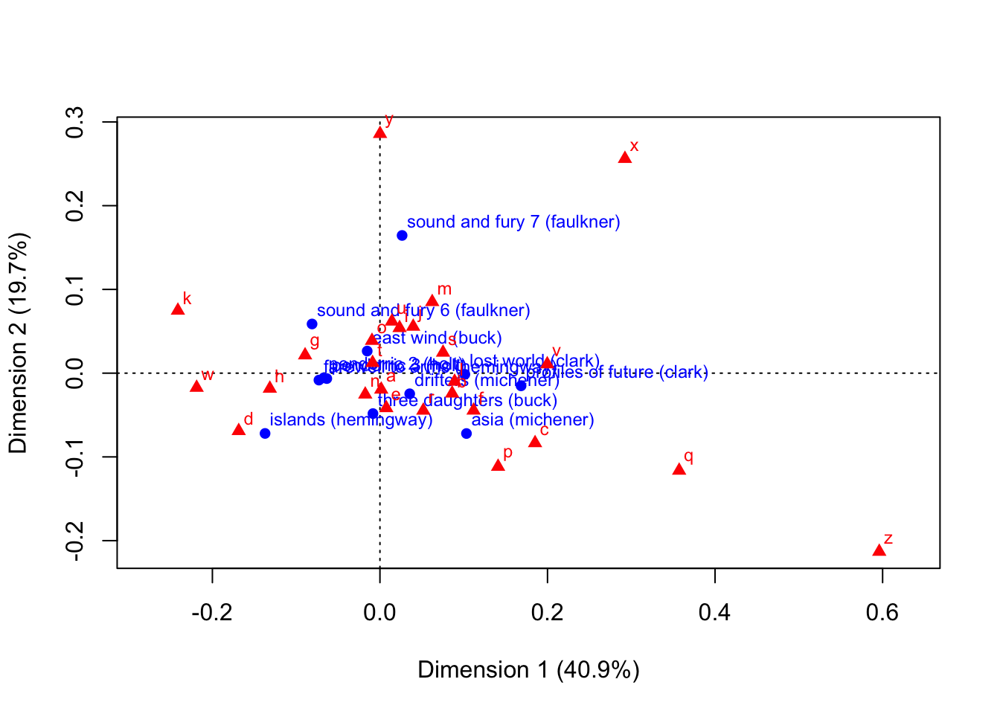

Libraries
library(vegan)
library(xlsx)
library(skimr)
library(janitor)
library(tidyverse)
library(ggbiplot)
library(ca)
library(CCA)library(vegan)
library(xlsx)
library(skimr)
library(janitor)
library(tidyverse)
library(ggbiplot)
library(ca)
library(CCA)Methods to Distinguish
General Packages
PCA::Software functions
prcomp - PCAprincomp - PCAcmdscale() - mdsfactanal() - factor analysislabdsv::pcaade4::An ecological data matrix generally has the format of a main “response” matrix, with counts of species (columns) at each site (rows). We will generally have another data frame with the covariates describing each site, called the “environmental covariate” matrix and “species covariates” matrix.
There are a few ways to do a PCA in R. In order of preferred use,
We’ll use USArrests example to show the similarity between all the program functionality
USArrests %>% head() # This is what the data looks like Murder Assault UrbanPop Rape
Alabama 13.2 236 58 21.2
Alaska 10.0 263 48 44.5
Arizona 8.1 294 80 31.0
Arkansas 8.8 190 50 19.5
California 9.0 276 91 40.6
Colorado 7.9 204 78 38.7prcomp uses svd under the hood, and is generally the main workhorse for doing principal components analysis.
us_pr <- prcomp(USArrests, scale = TRUE)
us_pr$sdev^2 # the variances[1] 2.4802416 0.9897652 0.3565632 0.1734301us_pr$rotation PC1 PC2 PC3 PC4
Murder -0.5358995 0.4181809 -0.3412327 0.64922780
Assault -0.5831836 0.1879856 -0.2681484 -0.74340748
UrbanPop -0.2781909 -0.8728062 -0.3780158 0.13387773
Rape -0.5434321 -0.1673186 0.8177779 0.08902432eigen is the standard diagonalization technique, with the variance explained extracted in
us_Y <- cov(USArrests %>% scale(center = TRUE, scale = TRUE))
us_Y <- cor(USArrests) # the same as cov of centered matrix
us_eig <- eigen(us_Y)
# variances
us_eig$values[1] 2.4802416 0.9897652 0.3565632 0.1734301us_eig$vectors # loadings [,1] [,2] [,3] [,4]
[1,] -0.5358995 0.4181809 -0.3412327 0.64922780
[2,] -0.5831836 0.1879856 -0.2681484 -0.74340748
[3,] -0.2781909 -0.8728062 -0.3780158 0.13387773
[4,] -0.5434321 -0.1673186 0.8177779 0.08902432uses eigen under the hood, mostly here for compatibility reasons
# correlation version
us_prin <- princomp(USArrests, cor = TRUE)
us_prin$sdev^2 Comp.1 Comp.2 Comp.3 Comp.4
2.4802416 0.9897652 0.3565632 0.1734301 # loadings
us_prin$loadings
Loadings:
Comp.1 Comp.2 Comp.3 Comp.4
Murder 0.536 0.418 0.341 0.649
Assault 0.583 0.188 0.268 -0.743
UrbanPop 0.278 -0.873 0.378 0.134
Rape 0.543 -0.167 -0.818
Comp.1 Comp.2 Comp.3 Comp.4
SS loadings 1.00 1.00 1.00 1.00
Proportion Var 0.25 0.25 0.25 0.25
Cumulative Var 0.25 0.50 0.75 1.00# these scores should be the same, can't figure out why they're slightly different?
us_prin$scores %>% head() Comp.1 Comp.2 Comp.3 Comp.4
Alabama 0.9855659 1.1333924 0.44426879 0.156267145
Alaska 1.9501378 1.0732133 -2.04000333 -0.438583440
Arizona 1.7631635 -0.7459568 -0.05478082 -0.834652924
Arkansas -0.1414203 1.1197968 -0.11457369 -0.182810896
California 2.5239801 -1.5429340 -0.59855680 -0.341996478
Colorado 1.5145629 -0.9875551 -1.09500699 0.001464887scale(USArrests) %*% us_eig$vectors %>% head() [,1] [,2] [,3] [,4]
Alabama -0.9756604 1.1220012 -0.43980366 0.154696581
Alaska -1.9305379 1.0624269 2.01950027 -0.434175454
Arizona -1.7454429 -0.7384595 0.05423025 -0.826264240
Arkansas 0.1399989 1.1085423 0.11342217 -0.180973554
California -2.4986128 -1.5274267 0.59254100 -0.338559240
Colorado -1.4993407 -0.9776297 1.08400162 0.001450164# the scale variables
cbind(us_prin$center,
attr(scale(USArrests), "scaled:center")) [,1] [,2]
Murder 7.788 7.788
Assault 170.760 170.760
UrbanPop 65.540 65.540
Rape 21.232 21.232n <- nrow(USArrests)
cbind(us_prin$scale,
attr(scale(USArrests), "scaled:scale") * sqrt((n-1) / n)) [,1] [,2]
Murder 4.311735 4.311735
Assault 82.500075 82.500075
UrbanPop 14.329285 14.329285
Rape 9.272248 9.272248# covariance version
us_prin_cov <- princomp(USArrests) # uses factor of 1/n for variance calculations
# the svd equivalent
n <- nrow(USArrests)
us_svd_cov <- svd(cov(USArrests) * (n-1) / n)
cbind(us_prin_cov$sdev^2,
us_svd_cov$d) [,1] [,2]
Comp.1 6870.892554 6870.892554
Comp.2 197.952519 197.952519
Comp.3 41.270398 41.270398
Comp.4 6.040961 6.040961only works for when n > p, “R”-mode PCA refers to the respondents (rows) and “Q”-mode refers to the questions (columns). difference is just interpretation. SVD is prefered
\begin{aligned} \Sigma = UDV' \\ U'\Sigma = DV' \end{aligned}
us_Y <- cov(USArrests %>% scale(center = TRUE, scale = TRUE))
us_Y <- cor(USArrests) # the same as cov of centered matrix
us_svd <- svd(us_Y)
# UDV'
# us_svd$u %*% diag(us_svd$d) %*% t(us_svd$v)
us_svd$d # the variances[1] 2.4802416 0.9897652 0.3565632 0.1734301us_svd$v # the loadings [,1] [,2] [,3] [,4]
[1,] -0.5358995 0.4181809 -0.3412327 0.64922780
[2,] -0.5831836 0.1879856 -0.2681484 -0.74340748
[3,] -0.2781909 -0.8728062 -0.3780158 0.13387773
[4,] -0.5434321 -0.1673186 0.8177779 0.08902432ca::ca()FactoMineR::CA()ade4::dudi.coa()amap::afc()MASS::corresp()author_ca <- ca(author)
plot(author_ca)
lm can handle multivariate regressions
\begin{aligned} \hat B = (X'X)^{-1}X'Y \end{aligned} We can also formulate the answers w/ the centered X matrix \begin{aligned} \mathbf{\hat B_1} &= (\mathbf{X_c}'\mathbf{X_c})^{-1}\mathbf{X_c}'\mathbf{Y} \\ \mathbf{\hat \beta_0} &= \mathbf{\bar y} - \mathbf{\bar x}'\mathbf{\hat B_1} \end{aligned}
iris_lm <- lm(cbind(Sepal.Length, Sepal.Width, Petal.Length, Petal.Width)~Species, data = iris)# Useful for manual calculations
Y <- with(iris, cbind(Sepal.Length, Sepal.Width, Petal.Length, Petal.Width))
X <- model.matrix(~Species, data = iris)
X1 <- X[,-1] # drop the intercept
Xc <- X1 %>% scale(scale = F)
SYY <- cov(Y)
SYX <- cov(Y, X1)
SXX <- cov(X1)# Manual calculation of B
B <- solve(crossprod(X)) %*% t(X) %*% Y # B
# B calculation with centered matrices
B1 <- solve(crossprod(Xc)) %*% t(Xc) %*% Y # B_1
B0 <- colMeans(Y) - t(colMeans(X1)) %*% B1
# B calculation w/ covariances
B1_S <- solve(SXX) %*% t(SYX)
B0_S <- colMeans(Y) - t(colMeans(X1)) %*% B1_S
list(lm = coef(iris_lm),
manual = B,
centered = rbind(B0, B1),
covariance = rbind(B0_S, B1_S))$lm
Sepal.Length Sepal.Width Petal.Length Petal.Width
(Intercept) 5.006 3.428 1.462 0.246
Speciesversicolor 0.930 -0.658 2.798 1.080
Speciesvirginica 1.582 -0.454 4.090 1.780
$manual
Sepal.Length Sepal.Width Petal.Length Petal.Width
(Intercept) 5.006 3.428 1.462 0.246
Speciesversicolor 0.930 -0.658 2.798 1.080
Speciesvirginica 1.582 -0.454 4.090 1.780
$centered
Sepal.Length Sepal.Width Petal.Length Petal.Width
5.006 3.428 1.462 0.246
Speciesversicolor 0.930 -0.658 2.798 1.080
Speciesvirginica 1.582 -0.454 4.090 1.780
$covariance
Sepal.Length Sepal.Width Petal.Length Petal.Width
5.006 3.428 1.462 0.246
Speciesversicolor 0.930 -0.658 2.798 1.080
Speciesvirginica 1.582 -0.454 4.090 1.780\begin{aligned} R^2 = \frac{|S_{XY} S_{XX}^{-1} S_{YX}|}{|S_{YY}|} \end{aligned}
# TODO: Why is R^2 zero here
# R^2 from each regression
# vapply(summary(iris_lm),FUN = function(x) x$r.squared, FUN.VALUE = numeric(1))
det(SYX %*% solve(SXX) %*% t(SYX)) / det(SYY) # way small, basically 0[1] 4.449697e-31Consider the partitioning, from pg 343 of Rencher Methods of Multivariate Analysis
\begin{aligned} \mathbf{Y'Y} - n\mathbf{\bar y\bar y'} &= (\mathbf{Y'Y} + \mathbf{Y'X'\hat{B}}) - (\mathbf{Y'X'\hat{B}} - n\mathbf{\bar y\bar y'}) \\ &\equiv \mathbf{E} + \mathbf{H} \end{aligned}
In hypothesis testing, the matrix E^{-1}H is pretty special, and many of the tests can be expressed in terms of the eigenvalues of this matrix. Hence, let \lambda_i be the ith largest eigenvalue of E^{-1}H.
Redundancy analysis can be understood as a multivariate regression followed by a PCA on the (covariance) of the fitted values.
It seems I’m running into a bunch of singularity issues due to the fact that n < p in these matrices, the standard eigenequation of redundancy analysis is:
\begin{aligned} (S_{YX}S^{-1}_{XX}S'_{YX} - \lambda_k I)u_k = 0 \end{aligned}
The ecological matrix dune is matrix counts of 30 species (columns) from 20 sites (rows). The covariate matrix dune.env is covariates of the 20 sites (rows), with 5 features of the site (columns):
data(dune)
data(dune.env)
dune %>% head() Achimill Agrostol Airaprae Alopgeni Anthodor Bellpere Bromhord Chenalbu
1 1 0 0 0 0 0 0 0
2 3 0 0 2 0 3 4 0
3 0 4 0 7 0 2 0 0
4 0 8 0 2 0 2 3 0
5 2 0 0 0 4 2 2 0
6 2 0 0 0 3 0 0 0
Cirsarve Comapalu Eleopalu Elymrepe Empenigr Hyporadi Juncarti Juncbufo
1 0 0 0 4 0 0 0 0
2 0 0 0 4 0 0 0 0
3 0 0 0 4 0 0 0 0
4 2 0 0 4 0 0 0 0
5 0 0 0 4 0 0 0 0
6 0 0 0 0 0 0 0 0
Lolipere Planlanc Poaprat Poatriv Ranuflam Rumeacet Sagiproc Salirepe
1 7 0 4 2 0 0 0 0
2 5 0 4 7 0 0 0 0
3 6 0 5 6 0 0 0 0
4 5 0 4 5 0 0 5 0
5 2 5 2 6 0 5 0 0
6 6 5 3 4 0 6 0 0
Scorautu Trifprat Trifrepe Vicilath Bracruta Callcusp
1 0 0 0 0 0 0
2 5 0 5 0 0 0
3 2 0 2 0 2 0
4 2 0 1 0 2 0
5 3 2 2 0 2 0
6 3 5 5 0 6 0dune.env %>% head() A1 Moisture Management Use Manure
1 2.8 1 SF Haypastu 4
2 3.5 1 BF Haypastu 2
3 4.3 2 SF Haypastu 4
4 4.2 2 SF Haypastu 4
5 6.3 1 HF Hayfield 2
6 4.3 1 HF Haypastu 2dune_rda <- rda(dune ~ Manure, dune.env, scale = T)
dune_rdaCall: rda(formula = dune ~ Manure, data = dune.env, scale = T)
Inertia Proportion Rank
Total 30.0000 1.0000
Constrained 8.7974 0.2932 4
Unconstrained 21.2026 0.7068 15
Inertia is correlations
Eigenvalues for constrained axes:
RDA1 RDA2 RDA3 RDA4
4.374 2.078 1.449 0.896
Eigenvalues for unconstrained axes:
PC1 PC2 PC3 PC4 PC5 PC6 PC7 PC8 PC9 PC10 PC11 PC12 PC13
5.133 3.447 2.462 1.924 1.662 1.366 1.357 0.926 0.839 0.585 0.511 0.439 0.308
PC14 PC15
0.159 0.084 summary(dune_rda)
Call:
rda(formula = dune ~ Manure, data = dune.env, scale = T)
Partitioning of correlations:
Inertia Proportion
Total 30.000 1.0000
Constrained 8.797 0.2932
Unconstrained 21.203 0.7068
Eigenvalues, and their contribution to the correlations
Importance of components:
RDA1 RDA2 RDA3 RDA4 PC1 PC2 PC3
Eigenvalue 4.3740 2.07784 1.44948 0.89609 5.1334 3.4467 2.46206
Proportion Explained 0.1458 0.06926 0.04832 0.02987 0.1711 0.1149 0.08207
Cumulative Proportion 0.1458 0.21506 0.26338 0.29325 0.4644 0.5793 0.66132
PC4 PC5 PC6 PC7 PC8 PC9 PC10
Eigenvalue 1.92357 1.66179 1.36650 1.35737 0.92607 0.83920 0.58545
Proportion Explained 0.06412 0.05539 0.04555 0.04525 0.03087 0.02797 0.01952
Cumulative Proportion 0.72544 0.78083 0.82638 0.87163 0.90250 0.93047 0.94999
PC11 PC12 PC13 PC14 PC15
Eigenvalue 0.51113 0.43886 0.30750 0.158961 0.083959
Proportion Explained 0.01704 0.01463 0.01025 0.005299 0.002799
Cumulative Proportion 0.96702 0.98165 0.99190 0.997201 1.000000
Accumulated constrained eigenvalues
Importance of components:
RDA1 RDA2 RDA3 RDA4
Eigenvalue 4.3740 2.0778 1.4495 0.8961
Proportion Explained 0.4972 0.2362 0.1648 0.1019
Cumulative Proportion 0.4972 0.7334 0.8981 1.0000
Scaling 2 for species and site scores
* Species are scaled proportional to eigenvalues
* Sites are unscaled: weighted dispersion equal on all dimensions
* General scaling constant of scores: 4.886172
Species scores
RDA1 RDA2 RDA3 RDA4 PC1 PC2
Achimill 0.26765 0.33281 0.049656 0.003056 -0.49105 0.36224
Agrostol -0.02671 -0.41434 0.115610 -0.014514 0.65940 -0.11236
Airaprae -0.41321 0.05069 -0.125661 -0.091859 -0.41815 -0.52440
Alopgeni 0.34142 -0.21078 0.274032 -0.041120 0.42422 -0.37590
Anthodor -0.06138 0.31573 -0.003043 -0.028513 -0.62121 -0.03545
Bellpere 0.31718 0.07152 -0.201198 -0.229336 -0.21895 0.18262
Bromhord 0.36283 0.13117 -0.019584 0.009624 -0.29475 0.21019
Chenalbu -0.01231 -0.17847 0.341080 0.138579 0.05555 -0.24663
Cirsarve 0.20685 -0.34222 -0.231882 -0.153871 0.03885 -0.12148
Comapalu -0.42230 0.05180 -0.128423 -0.093878 0.32227 0.28984
Eleopalu -0.37212 -0.15905 0.279029 0.078005 0.51088 0.27431
Elymrepe 0.51896 -0.11325 -0.328887 -0.135082 0.09940 -0.03675
Empenigr -0.29065 0.03565 -0.088387 -0.064612 -0.33962 -0.57676
Hyporadi -0.31957 0.10278 -0.182774 0.061050 -0.41390 -0.56049
Juncarti -0.21820 -0.05029 0.136507 0.289544 0.53378 0.06805
Juncbufo 0.20091 0.12787 0.221180 0.222888 0.28841 -0.40733
Lolipere 0.59645 -0.16436 -0.190963 0.120042 -0.38788 0.29546
Planlanc 0.13923 0.32854 0.138828 0.059107 -0.56352 0.36121
Poaprat 0.57532 -0.22060 -0.156549 0.225524 -0.32898 0.17668
Poatriv 0.61056 -0.08547 0.349355 -0.027330 -0.02276 -0.08873
Ranuflam -0.45682 -0.14959 0.255045 0.059903 0.52417 0.17895
Rumeacet 0.33798 0.39609 0.258611 -0.208808 -0.17508 0.14683
Sagiproc 0.20419 -0.09090 -0.056583 0.040345 0.15410 -0.68467
Salirepe -0.51264 0.06289 -0.155896 -0.113961 -0.01356 -0.12479
Scorautu -0.13605 0.41327 -0.054013 0.046293 -0.48563 -0.23743
Trifprat 0.23866 0.26819 0.265287 -0.231610 -0.30973 0.27939
Trifrepe 0.21756 0.48721 -0.033738 0.124932 -0.09282 0.16628
Vicilath 0.04915 0.21898 -0.287987 0.478432 -0.21306 0.10011
Bracruta -0.09738 0.26181 0.009227 -0.013498 0.06513 0.04448
Callcusp -0.37492 -0.05173 0.073218 -0.006614 0.45127 0.28578
Site scores (weighted sums of species scores)
RDA1 RDA2 RDA3 RDA4 PC1 PC2
1 0.6084 -1.3919 -1.2828 -0.15944 -0.27047 0.56624
2 1.5953 0.7411 -1.1559 -0.60367 -0.26494 0.30541
3 1.2359 -1.4977 -0.5377 -0.66021 0.06306 0.08227
4 1.4686 -2.5913 -1.8932 -1.64469 0.20741 -0.64851
5 1.1634 2.0559 0.4468 -2.37998 -0.65117 0.61097
6 1.0317 3.0282 1.4870 -1.67094 -0.78754 1.02488
7 1.0569 1.4590 0.8726 0.01950 -1.94387 0.94362
8 -0.1454 -1.4755 1.1266 1.54932 0.28659 -0.10607
9 0.8908 -0.6300 0.3403 1.22041 1.43342 -0.91507
10 1.1827 2.1193 -1.2125 1.52260 -1.07292 1.17204
11 0.0919 1.0554 -2.2529 3.57753 -0.36050 -0.25697
12 0.3039 -0.2200 1.6086 -0.09126 1.70365 -1.94126
13 0.2414 -1.7792 3.1394 1.22768 0.29658 -1.31665
14 -1.6591 -0.2896 0.3470 -0.39614 1.16871 1.25218
15 -1.6951 -0.7286 0.5571 -0.06828 1.19948 0.87768
16 -1.4158 -2.0152 2.1448 0.16275 1.36070 0.47911
17 -0.9349 0.5539 -0.7611 -0.80973 -1.20578 -0.30418
18 -0.4582 1.1964 -1.6920 0.54033 -0.86720 0.59227
19 -2.2192 1.5606 -2.2704 -1.34738 -1.81306 -3.07908
20 -2.3432 -1.1506 0.9882 0.01161 1.51785 0.66114
Site constraints (linear combinations of constraining variables)
RDA1 RDA2 RDA3 RDA4 PC1 PC2
1 1.10430 -1.8270 -1.2379 -0.8214 -0.27047 0.56624
2 1.02356 1.4013 0.5966 -1.1865 -0.26494 0.30541
3 1.10430 -1.8270 -1.2379 -0.8214 0.06306 0.08227
4 1.10430 -1.8270 -1.2379 -0.8214 0.20741 -0.64851
5 1.02356 1.4013 0.5966 -1.1865 -0.65117 0.61097
6 1.02356 1.4013 0.5966 -1.1865 -0.78754 1.02488
7 -0.06573 -0.9527 1.8209 0.7398 -1.94387 0.94362
8 -0.06573 -0.9527 1.8209 0.7398 0.28659 -0.10607
9 0.72183 0.8482 -1.0417 2.1068 1.43342 -0.91507
10 0.72183 0.8482 -1.0417 2.1068 -1.07292 1.17204
11 0.72183 0.8482 -1.0417 2.1068 -0.36050 -0.25697
12 1.02356 1.4013 0.5966 -1.1865 1.70365 -1.94126
13 -0.06573 -0.9527 1.8209 0.7398 0.29658 -1.31665
14 -1.55162 0.1903 -0.4719 -0.3449 1.16871 1.25218
15 -1.55162 0.1903 -0.4719 -0.3449 1.19948 0.87768
16 -0.06573 -0.9527 1.8209 0.7398 1.36070 0.47911
17 -1.55162 0.1903 -0.4719 -0.3449 -1.20578 -0.30418
18 -1.55162 0.1903 -0.4719 -0.3449 -0.86720 0.59227
19 -1.55162 0.1903 -0.4719 -0.3449 -1.81306 -3.07908
20 -1.55162 0.1903 -0.4719 -0.3449 1.51785 0.66114
Biplot scores for constraining variables
RDA1 RDA2 RDA3 RDA4 PC1 PC2
Manure.L 0.7227 -0.6209 0.2738 -0.1315 0 0
Manure.Q -0.5907 -0.4981 -0.5890 -0.2369 0 0
Manure.C 0.5983 0.2084 -0.7428 0.2166 0 0
Manure^4 0.1381 0.4330 -0.1116 -0.8837 0 0
Centroids for factor constraints
RDA1 RDA2 RDA3 RDA4 PC1 PC2
Manure0 -1.55162 0.1903 -0.4719 -0.3449 0 0
Manure1 0.72183 0.8482 -1.0417 2.1068 0 0
Manure2 1.02356 1.4013 0.5966 -1.1865 0 0
Manure3 -0.06573 -0.9527 1.8209 0.7398 0 0
Manure4 1.10430 -1.8270 -1.2379 -0.8214 0 0scores(dune_rda, scaling = 0, display = "sp") RDA1 RDA2
Achimill 0.143458988 0.25880807
Agrostol -0.014318256 -0.32220859
Airaprae -0.221477424 0.03941836
Alopgeni 0.182994436 -0.16391065
Anthodor -0.032899432 0.24552799
Bellpere 0.170004691 0.05561525
Bromhord 0.194470873 0.10200638
Chenalbu -0.006598932 -0.13878455
Cirsarve 0.110871155 -0.26612997
Comapalu -0.226345641 0.04028481
Eleopalu -0.199452547 -0.12368720
Elymrepe 0.278156602 -0.08806907
Empenigr -0.155781754 0.02772590
Hyporadi -0.171282469 0.07992401
Juncarti -0.116954796 -0.03910985
Juncbufo 0.107686567 0.09944215
Lolipere 0.319690365 -0.12781833
Planlanc 0.074625723 0.25548840
Poaprat 0.308361280 -0.17154631
Poatriv 0.327251488 -0.06646981
Ranuflam -0.244850313 -0.11632722
Rumeacet 0.181152477 0.30802177
Sagiproc 0.109442555 -0.07068686
Salirepe -0.274766547 0.04890272
Scorautu -0.072918338 0.32138155
Trifprat 0.127920010 0.20855494
Trifrepe 0.116609271 0.37888351
Vicilath 0.026342810 0.17029063
Bracruta -0.052193007 0.20359595
Callcusp -0.200951405 -0.04022983
attr(,"const")
[1] 4.886172Y <- dune %>% data.matrix()
X <- model.matrix(~Manure, data = dune.env)[,-1, drop = F]
# Y <- dune %>% scale(scale = T)
SYY <- cov(Y)
SXX <- cov(X)
SYX <- cov(Y, X)
rbind(cbind(SYY, SYX),
cbind(t(SYX), SXX)) Achimill Agrostol Airaprae Alopgeni Anthodor
Achimill 1.53684211 -2.02105263 0.00000000 -1.20000000 1.32631579
Agrostol -2.02105263 7.20000000 -0.63157895 3.76842105 -2.65263158
Airaprae 0.00000000 -0.63157895 0.61842105 -0.47368421 0.77631579
Alopgeni -1.20000000 3.76842105 -0.47368421 6.90526316 -1.98947368
Anthodor 1.32631579 -2.65263158 0.77631579 -1.98947368 2.89210526
Bellpere 0.55789474 -0.37894737 -0.17105263 0.03157895 0.12368421
Bromhord 1.26315789 -0.63157895 -0.19736842 -0.68421053 0.64473684
Chenalbu -0.04210526 0.13684211 -0.01315789 0.16842105 -0.05526316
Cirsarve -0.08421053 0.58947368 -0.02631579 0.02105263 -0.11052632
Comapalu -0.16842105 0.33684211 -0.05263158 -0.37894737 -0.22105263
Eleopalu -1.05263158 3.57894737 -0.32894737 0.36842105 -1.38157895
Elymrepe 0.16842105 0.18947368 -0.34210526 0.80000000 -0.59473684
Empenigr -0.08421053 -0.25263158 0.28947368 -0.18947368 0.31052632
Hyporadi -0.16842105 -1.13684211 0.88157895 -0.85263158 0.97631579
Juncarti -0.75789474 1.98947368 -0.23684211 0.61052632 -0.99473684
Juncbufo -0.33684211 0.62105263 -0.17105263 1.87368421 -0.50789474
Lolipere 1.45263158 -2.80000000 -0.76315789 -0.86315789 0.05789474
Planlanc 1.32631579 -3.28421053 -0.13157895 -2.46315789 1.98421053
Poaprat 0.71578947 -1.32631579 -0.52631579 0.34736842 -0.28421053
Poatriv 0.97894737 0.98947368 -0.82894737 3.82105263 -0.21842105
Ranuflam -0.58947368 1.81052632 -0.18421053 0.14736842 -0.77368421
Rumeacet 0.71578947 -1.53684211 -0.23684211 -0.54736842 1.32105263
Sagiproc -0.84210526 1.68421053 0.21052632 1.68421053 -0.47368421
Salirepe -0.46315789 -0.07368421 0.32894737 -1.04210526 0.02368421
Scorautu 0.30526316 -2.29473684 0.44736842 -1.16842105 0.75263158
Trifprat 0.56842105 -1.13684211 -0.11842105 -0.85263158 0.92368421
Trifrepe 1.02105263 -1.56842105 -0.30263158 -0.29473684 0.50789474
Vicilath 0.04210526 -0.50526316 -0.05263158 -0.37894737 -0.01052632
Bracruta -0.58947368 0.02105263 -0.17105263 -0.32631579 -0.07631579
Callcusp -0.42105263 1.47368421 -0.13157895 -0.31578947 -0.55263158
Manure.L 0.00000000 0.38280203 -0.14563121 0.63245553 -0.21220547
Manure.Q -0.23068865 0.22224882 0.13011403 -0.34321970 -0.10057463
Manure.C 0.11650497 -0.24965350 -0.06241337 -0.06657427 0.02080446
Manure^4 0.10694151 -0.24533640 0.02359004 -0.05032542 0.13053155
Bellpere Bromhord Chenalbu Cirsarve Comapalu
Achimill 0.55789474 1.26315789 -0.042105263 -0.084210526 -0.16842105
Agrostol -0.37894737 -0.63157895 0.136842105 0.589473684 0.33684211
Airaprae -0.17105263 -0.19736842 -0.013157895 -0.026315789 -0.05263158
Alopgeni 0.03157895 -0.68421053 0.168421053 0.021052632 -0.37894737
Anthodor 0.12368421 0.64473684 -0.055263158 -0.110526316 -0.22105263
Bellpere 1.08157895 1.06578947 -0.034210526 0.142105263 -0.13684211
Bromhord 1.06578947 1.98684211 -0.039473684 0.236842105 -0.15789474
Chenalbu -0.03421053 -0.03947368 0.050000000 -0.005263158 -0.01052632
Cirsarve 0.14210526 0.23684211 -0.005263158 0.200000000 -0.02105263
Comapalu -0.13684211 -0.15789474 -0.010526316 -0.021052632 0.37894737
Eleopalu -0.85526316 -0.98684211 -0.065789474 -0.131578947 0.68421053
Elymrepe 1.00526316 0.86842105 -0.068421053 0.284210526 -0.27368421
Empenigr -0.06842105 -0.07894737 -0.005263158 -0.010526316 -0.02105263
Hyporadi -0.30789474 -0.35526316 -0.023684211 -0.047368421 -0.09473684
Juncarti -0.61578947 -0.71052632 -0.047368421 -0.094736842 0.12631579
Juncbufo -0.44473684 -0.30263158 0.123684211 -0.068421053 -0.13684211
Lolipere 1.01578947 1.65789474 -0.152631579 0.221052632 -0.61052632
Planlanc 0.26842105 0.65789474 -0.068421053 -0.136842105 -0.27368421
Poaprat 0.88421053 1.05263158 -0.021052632 0.168421053 -0.50526316
Poatriv 1.16052632 1.77631579 0.307894737 0.194736842 -0.66315789
Ranuflam -0.47894737 -0.55263158 0.068421053 -0.073684211 0.27368421
Rumeacet -0.08947368 0.13157895 -0.047368421 -0.094736842 -0.18947368
Sagiproc -0.15789474 0.00000000 0.052631579 0.421052632 -0.21052632
Salirepe -0.06052632 -0.43421053 -0.028947368 -0.057894737 -0.11578947
Scorautu 0.52105263 0.50000000 -0.036842105 -0.073684211 -0.14736842
Trifprat -0.09736842 0.06578947 -0.023684211 -0.047368421 -0.09473684
Trifrepe 0.55000000 1.03947368 -0.018421053 -0.142105263 0.24210526
Vicilath 0.07368421 0.05263158 -0.010526316 -0.021052632 -0.04210526
Bracruta -0.20263158 -0.77631579 -0.128947368 -0.047368421 -0.09473684
Callcusp -0.34210526 -0.39473684 -0.026315789 -0.052631579 0.31578947
Manure.L 0.08737872 0.12898764 0.020804458 0.074896050 -0.11650497
Manure.Q -0.02742944 -0.20044593 -0.016176338 0.052045610 0.10409122
Manure.C 0.15395299 0.17891834 -0.029126242 0.041608917 -0.04993070
Manure^4 0.15569425 0.07077012 -0.026735377 0.009436015 0.01887203
Eleopalu Elymrepe Empenigr Hyporadi Juncarti
Achimill -1.05263158 0.16842105 -0.084210526 -0.16842105 -0.757894737
Agrostol 3.57894737 0.18947368 -0.252631579 -1.13684211 1.989473684
Airaprae -0.32894737 -0.34210526 0.289473684 0.88157895 -0.236842105
Alopgeni 0.36842105 0.80000000 -0.189473684 -0.85263158 0.610526316
Anthodor -1.38157895 -0.59473684 0.310526316 0.97631579 -0.994736842
Bellpere -0.85526316 1.00526316 -0.068421053 -0.30789474 -0.615789474
Bromhord -0.98684211 0.86842105 -0.078947368 -0.35526316 -0.710526316
Chenalbu -0.06578947 -0.06842105 -0.005263158 -0.02368421 -0.047368421
Cirsarve -0.13157895 0.28421053 -0.010526316 -0.04736842 -0.094736842
Comapalu 0.68421053 -0.27368421 -0.021052632 -0.09473684 0.126315789
Eleopalu 5.56578947 -1.71052632 -0.131578947 -0.59210526 2.552631579
Elymrepe -1.71052632 4.32631579 -0.136842105 -0.61578947 0.031578947
Empenigr -0.13157895 -0.13684211 0.200000000 0.47894737 -0.094736842
Hyporadi -0.59210526 -0.61578947 0.478947368 1.52368421 -0.426315789
Juncarti 2.55263158 0.03157895 -0.094736842 -0.42631579 2.621052632
Juncbufo -0.85526316 0.37368421 -0.068421053 -0.30789474 0.226315789
Lolipere -2.97368421 1.92631579 -0.305263158 -0.63684211 -1.484210526
Planlanc -1.71052632 -0.72631579 -0.136842105 -0.08947368 -1.231578947
Poaprat -2.31578947 1.97894737 -0.252631579 -0.61052632 -0.589473684
Poatriv -2.46052632 2.74210526 -0.331578947 -1.49210526 -0.773684211
Ranuflam 2.13157895 -0.95789474 -0.073684211 -0.33157895 1.231578947
Rumeacet -1.18421053 0.45263158 -0.094736842 -0.42631579 -0.431578947
Sagiproc -0.89473684 0.31578947 0.210526316 0.52631579 -0.105263158
Salirepe 0.32894737 -0.75263158 0.257894737 0.52894737 0.531578947
Scorautu -1.55263158 -0.53684211 0.347368421 1.03684211 -0.768421053
Trifprat -0.59210526 -0.19473684 -0.047368421 -0.21315789 -0.426315789
Trifrepe -1.14473684 -0.16315789 -0.036842105 -0.27105263 -1.015789474
Vicilath -0.26315789 -0.27368421 -0.021052632 0.11578947 -0.189473684
Bracruta 0.77631579 -1.45789474 0.057894737 0.05000000 0.626315789
Callcusp 2.07894737 -0.68421053 -0.052631579 -0.23684211 0.631578947
Manure.L -0.12898764 0.40776738 -0.058252483 -0.22884904 -0.108183183
Manure.Q 0.14418041 -0.02672612 0.052045610 0.14980696 0.004219914
Manure.C -0.51178967 0.50762878 -0.024965350 -0.01248267 -0.141470316
Manure^4 -0.25949042 0.18557497 0.009436015 -0.02044470 -0.261063091
Juncbufo Lolipere Planlanc Poaprat Poatriv
Achimill -0.33684211 1.45263158 1.32631579 0.71578947 0.97894737
Agrostol 0.62105263 -2.80000000 -3.28421053 -1.32631579 0.98947368
Airaprae -0.17105263 -0.76315789 -0.13157895 -0.52631579 -0.82894737
Alopgeni 1.87368421 -0.86315789 -2.46315789 0.34736842 3.82105263
Anthodor -0.50789474 0.05789474 1.98421053 -0.28421053 -0.21842105
Bellpere -0.44473684 1.01578947 0.26842105 0.88421053 1.16052632
Bromhord -0.30263158 1.65789474 0.65789474 1.05263158 1.77631579
Chenalbu 0.12368421 -0.15263158 -0.06842105 -0.02105263 0.30789474
Cirsarve -0.06842105 0.22105263 -0.13684211 0.16842105 0.19473684
Comapalu -0.13684211 -0.61052632 -0.27368421 -0.50526316 -0.66315789
Eleopalu -0.85526316 -2.97368421 -1.71052632 -2.31578947 -2.46052632
Elymrepe 0.37368421 1.92631579 -0.72631579 1.97894737 2.74210526
Empenigr -0.06842105 -0.30526316 -0.13684211 -0.25263158 -0.33157895
Hyporadi -0.30789474 -0.63684211 -0.08947368 -0.61052632 -1.49210526
Juncarti 0.22631579 -1.48421053 -1.23157895 -0.58947368 -0.77368421
Juncbufo 1.92368421 -0.93157895 -0.36315789 -0.06315789 1.68684211
Lolipere -0.93157895 7.98947368 2.08421053 4.56842105 2.27894737
Planlanc -0.36315789 2.08421053 3.80000000 0.92631579 0.26842105
Poaprat -0.06315789 4.56842105 0.92631579 3.41052632 2.56842105
Poatriv 1.68684211 2.27894737 0.26842105 2.56842105 7.92368421
Ranuflam -0.16315789 -1.71578947 -0.95789474 -1.13684211 -0.74210526
Rumeacet 0.54210526 0.83157895 2.45263158 0.25263158 1.59473684
Sagiproc 0.89473684 -0.36842105 -1.05263158 0.00000000 0.73684211
Salirepe -0.37631579 -1.36315789 -0.27894737 -0.91578947 -1.82368421
Scorautu -0.37368421 0.60000000 0.93684211 0.44210526 -0.42631579
Trifprat -0.09736842 1.04736842 1.75263158 0.28421053 0.71842105
Trifrepe 0.18157895 1.40526316 0.88947368 0.74736842 1.20789474
Vicilath -0.13684211 0.54736842 0.35789474 0.28421053 -0.45263158
Bracruta -0.20263158 -0.21578947 1.17368421 -0.61052632 -1.91315789
Callcusp -0.34210526 -1.52631579 -0.68421053 -1.26315789 -1.34210526
Manure.L 0.07073516 0.69070802 -0.07489605 0.46601987 0.87794814
Manure.Q -0.26655792 -0.27710771 -0.35025289 -0.18567623 -0.76591445
Manure.C 0.02080446 0.67406445 0.05825248 0.41608917 0.11234407
Manure^4 -0.09593282 -0.10379617 0.09121481 -0.18242963 0.04560741
Ranuflam Rumeacet Sagiproc Salirepe Scorautu
Achimill -0.58947368 0.71578947 -0.84210526 -0.46315789 0.30526316
Agrostol 1.81052632 -1.53684211 1.68421053 -0.07368421 -2.29473684
Airaprae -0.18421053 -0.23684211 0.21052632 0.32894737 0.44736842
Alopgeni 0.14736842 -0.54736842 1.68421053 -1.04210526 -1.16842105
Anthodor -0.77368421 1.32105263 -0.47368421 0.02368421 0.75263158
Bellpere -0.47894737 -0.08947368 -0.15789474 -0.06052632 0.52105263
Bromhord -0.55263158 0.13157895 0.00000000 -0.43421053 0.50000000
Chenalbu 0.06842105 -0.04736842 0.05263158 -0.02894737 -0.03684211
Cirsarve -0.07368421 -0.09473684 0.42105263 -0.05789474 -0.07368421
Comapalu 0.27368421 -0.18947368 -0.21052632 -0.11578947 -0.14736842
Eleopalu 2.13157895 -1.18421053 -0.89473684 0.32894737 -1.55263158
Elymrepe -0.95789474 0.45263158 0.31578947 -0.75263158 -0.53684211
Empenigr -0.07368421 -0.09473684 0.21052632 0.25789474 0.34736842
Hyporadi -0.33157895 -0.42631579 0.52631579 0.52894737 1.03684211
Juncarti 1.23157895 -0.43157895 -0.10526316 0.53157895 -0.76842105
Juncbufo -0.16315789 0.54210526 0.89473684 -0.37631579 -0.37368421
Lolipere -1.71578947 0.83157895 -0.36842105 -1.36315789 0.60000000
Planlanc -0.95789474 2.45263158 -1.05263158 -0.27894737 0.93684211
Poaprat -1.13684211 0.25263158 0.00000000 -0.91578947 0.44210526
Poatriv -0.74210526 1.59473684 0.73684211 -1.82368421 -0.42631579
Ranuflam 1.37894737 -0.66315789 -0.31578947 0.64736842 -0.62105263
Rumeacet -0.66315789 3.25263158 -0.31578947 -0.52105263 0.07368421
Sagiproc -0.31578947 -0.31578947 2.42105263 -0.10526316 0.31578947
Salirepe 0.64736842 -0.52105263 -0.10526316 1.94473684 0.70000000
Scorautu -0.62105263 0.07368421 0.31578947 0.70000000 2.43157895
Trifprat -0.33157895 1.99473684 -0.47368421 -0.26052632 0.14210526
Trifrepe -0.57368421 0.82631579 -0.21052632 -0.72894737 1.16315789
Vicilath -0.14736842 -0.18947368 0.00000000 0.04210526 0.37894737
Bracruta 0.08947368 1.04736842 0.10526316 1.05526316 0.72105263
Callcusp 1.00000000 -0.47368421 -0.52631579 0.50000000 -0.68421053
Manure.L -0.10818318 0.09153962 0.14979210 -0.32038866 -0.30790598
Manure.Q 0.11112441 -0.47403704 -0.04219914 0.28625086 -0.08580493
Manure.C -0.27461885 0.04160892 0.11650497 -0.13730942 0.04160892
Manure^4 -0.12266820 0.33655121 -0.03145338 0.05189808 0.09750549
Trifprat Trifrepe Vicilath Bracruta Callcusp
Achimill 0.56842105 1.02105263 0.04210526 -0.58947368 -0.42105263
Agrostol -1.13684211 -1.56842105 -0.50526316 0.02105263 1.47368421
Airaprae -0.11842105 -0.30263158 -0.05263158 -0.17105263 -0.13157895
Alopgeni -0.85263158 -0.29473684 -0.37894737 -0.32631579 -0.31578947
Anthodor 0.92368421 0.50789474 -0.01052632 -0.07631579 -0.55263158
Bellpere -0.09736842 0.55000000 0.07368421 -0.20263158 -0.34210526
Bromhord 0.06578947 1.03947368 0.05263158 -0.77631579 -0.39473684
Chenalbu -0.02368421 -0.01842105 -0.01052632 -0.12894737 -0.02631579
Cirsarve -0.04736842 -0.14210526 -0.02105263 -0.04736842 -0.05263158
Comapalu -0.09473684 0.24210526 -0.04210526 -0.09473684 0.31578947
Eleopalu -0.59210526 -1.14473684 -0.26315789 0.77631579 2.07894737
Elymrepe -0.19473684 -0.16315789 -0.27368421 -1.45789474 -0.68421053
Empenigr -0.04736842 -0.03684211 -0.02105263 0.05789474 -0.05263158
Hyporadi -0.21315789 -0.27105263 0.11578947 0.05000000 -0.23684211
Juncarti -0.42631579 -1.01578947 -0.18947368 0.62631579 0.63157895
Juncbufo -0.09736842 0.18157895 -0.13684211 -0.20263158 -0.34210526
Lolipere 1.04736842 1.40526316 0.54736842 -0.21578947 -1.52631579
Planlanc 1.75263158 0.88947368 0.35789474 1.17368421 -0.68421053
Poaprat 0.28421053 0.74736842 0.28421053 -0.61052632 -1.26315789
Poatriv 0.71842105 1.20789474 -0.45263158 -1.91315789 -1.34210526
Ranuflam -0.33157895 -0.57368421 -0.14736842 0.08947368 1.00000000
Rumeacet 1.99473684 0.82631579 -0.18947368 1.04736842 -0.47368421
Sagiproc -0.47368421 -0.21052632 0.00000000 0.10526316 -0.52631579
Salirepe -0.26052632 -0.72894737 0.04210526 1.05526316 0.50000000
Scorautu 0.14210526 1.16315789 0.37894737 0.72105263 -0.68421053
Trifprat 1.52368421 0.62368421 -0.09473684 0.83947368 -0.23684211
Trifrepe 0.62368421 3.60789474 0.24210526 -0.16578947 0.02631579
Vicilath -0.09473684 0.24210526 0.27368421 0.32631579 -0.10526316
Bracruta 0.83947368 -0.16578947 0.32631579 3.62894737 -0.02631579
Callcusp -0.23684211 0.02631579 -0.10526316 -0.02631579 1.52631579
Manure.L 0.07073516 -0.17059656 -0.06657427 -0.22884904 -0.14147032
Manure.Q -0.24405171 -0.38049561 -0.02250621 -0.07525514 0.13363062
Manure.C -0.02912624 0.26213617 0.09986140 -0.01248267 -0.17475745
Manure^4 0.19972899 0.12738621 -0.07548812 0.10536884 -0.04718008
Manure.L Manure.Q Manure.C Manure^4
Achimill 0.00000000 -0.230688651 0.11650497 0.106941507
Agrostol 0.38280203 0.222248822 -0.24965350 -0.245336399
Airaprae -0.14563121 0.130114026 -0.06241337 0.023590038
Alopgeni 0.63245553 -0.343219700 -0.06657427 -0.050325415
Anthodor -0.21220547 -0.100574625 0.02080446 0.130531545
Bellpere 0.08737872 -0.027429443 0.15395299 0.155694253
Bromhord 0.12898764 -0.200445931 0.17891834 0.070770115
Chenalbu 0.02080446 -0.016176338 -0.02912624 -0.026735377
Cirsarve 0.07489605 0.052045610 0.04160892 0.009436015
Comapalu -0.11650497 0.104091221 -0.04993070 0.018872031
Eleopalu -0.12898764 0.144180407 -0.51178967 -0.259490422
Elymrepe 0.40776738 -0.026726124 0.50762878 0.185574968
Empenigr -0.05825248 0.052045610 -0.02496535 0.009436015
Hyporadi -0.22884904 0.149806959 -0.01248267 -0.020444700
Juncarti -0.10818318 0.004219914 -0.14147032 -0.261063091
Juncbufo 0.07073516 -0.266557923 0.02080446 -0.095932823
Lolipere 0.69070802 -0.277107709 0.67406445 -0.103796169
Planlanc -0.07489605 -0.350252891 0.05825248 0.091214815
Poaprat 0.46601987 -0.185676231 0.41608917 -0.182429630
Poatriv 0.87794814 -0.765914454 0.11234407 0.045607407
Ranuflam -0.10818318 0.111124411 -0.27461885 -0.122668199
Rumeacet 0.09153962 -0.474037045 0.04160892 0.336551214
Sagiproc 0.14979210 -0.042199143 0.11650497 -0.031453384
Salirepe -0.32038866 0.286250856 -0.13730942 0.051898084
Scorautu -0.30790598 -0.085804925 0.04160892 0.097505492
Trifprat 0.07073516 -0.244051713 -0.02912624 0.199728991
Trifrepe -0.17059656 -0.380495610 0.26213617 0.127386207
Vicilath -0.06657427 -0.022506210 0.09986140 -0.075488123
Bracruta -0.22884904 -0.075255139 -0.01248267 0.105368838
Callcusp -0.14147032 0.133630621 -0.17475745 -0.047180077
Manure.L 0.21973684 -0.054490209 0.01447368 -0.017406259
Manure.Q -0.05449021 0.220112782 -0.01445659 -0.004623449
Manure.C 0.01447368 -0.014456586 0.18815789 0.012433042
Manure^4 -0.01740626 -0.004623449 0.01243304 0.198308271solve(SXX) %*% t(SYX) Achimill Agrostol Airaprae Alopgeni Anthodor Bellpere
Manure.L -0.2635231 2.1081851 -0.52704628 2.687936e+00 -1.1067972 0.42163702
Manure.Q -1.0690450 1.4253933 0.44543540 -9.354143e-01 -0.7126966 0.04454354
Manure.C 0.5270463 -1.3176157 -0.26352314 -6.324555e-01 0.1054093 0.73786479
Manure^4 0.4581710 -0.9362624 0.09960238 -3.330669e-16 0.5378529 0.77689860
Bromhord Chenalbu Cirsarve Comapalu Eleopalu Elymrepe
Manure.L 0.3689324 0.07905694 0.42163702 -0.42163702 -0.4216370 1.8973666
Manure.Q -0.7572402 -0.06681531 0.35634832 0.35634832 0.3563483 0.5345225
Manure.C 0.8432740 -0.15811388 0.21081851 -0.21081851 -2.5825268 2.5298221
Manure^4 0.3187276 -0.11952286 0.07968191 0.07968191 -1.1753081 0.9561829
Empenigr Hyporadi Juncarti Juncbufo Lolipere Planlanc
Manure.L -0.21081851 -0.94868330 -0.6061032 -0.02635231 2.7933453 -0.7642171
Manure.Q 0.17817416 0.44543540 -0.2004459 -1.22494736 -0.3563483 -1.7594698
Manure.C -0.10540926 0.05270463 -0.6324555 0.05270463 3.3730962 0.2108185
Manure^4 0.03984095 -0.17928429 -1.3346719 -0.51793240 -0.4980119 0.3386481
Poaprat Poatriv Ranuflam Rumeacet Sagiproc Salirepe
Manure.L 1.8446620 3.3730962 -0.3689324 0.02635231 6.324555e-01 -1.1595018
Manure.Q -0.2672612 -2.6280689 0.3118048 -2.11581817 2.862294e-17 0.9799579
Manure.C 2.1081851 0.1054093 -1.3703203 -0.05270463 5.797509e-01 -0.5797509
Manure^4 -0.8964215 0.4581710 -0.5577734 1.65339958 -1.394433e-01 0.2191252
Scorautu Trifprat Trifrepe Vicilath Bracruta Callcusp
Manure.L -1.5811388 0.1581139 -1.3176157 -0.4216370 -1.15950181 -0.5006940
Manure.Q -0.7572402 -1.0690450 -1.9599158 -0.1781742 -0.62360956 0.4231636
Manure.C 0.2635231 -0.3162278 1.3176157 0.5797509 -0.05270463 -0.8432740
Manure^4 0.3187276 1.0159443 0.3984095 -0.4581710 0.41833001 -0.2191252MASS::ginv(SYY) %*% SYX %*% solve(SXX) %*% t(SYX) Achimill Agrostol Airaprae Alopgeni Anthodor
[1,] 0.2553953498 -0.566056529 -0.0235758370 -0.13981122 0.2551672789
[2,] -0.1074363815 0.024360688 0.0637690028 -0.30226489 -0.0461112640
[3,] -0.1214943762 0.209655866 0.0545456770 -0.02283602 -0.0560152651
[4,] 0.0640146357 -0.079583389 -0.0124734308 0.07883042 0.0451045991
[5,] -0.1039710613 0.134614007 0.0039384821 -0.11960332 -0.1183144244
[6,] -0.0184676690 0.002904284 0.0318721309 -0.04076162 0.0105736897
[7,] 0.0318202098 -0.048724852 0.0035897108 0.02593328 0.0403841403
[8,] 0.0376557980 -0.049163835 -0.0304950062 0.02732831 0.0051449980
[9,] -0.0509812305 0.110404842 0.0252212451 0.03383952 -0.0240734622
[10,] -0.2282120388 0.233493944 0.1289118125 -0.31290670 -0.1043618829
[11,] -0.1012833657 0.520324402 -0.0735999234 0.54673924 -0.1834585296
[12,] 0.1437322923 -0.360923216 -0.0358658814 -0.16014347 0.0874978053
[13,] -0.1970132883 0.498917002 0.0028048509 0.21345652 -0.2152180220
[14,] 0.1057187199 -0.275612309 -0.0385606760 -0.14992543 0.0724014984
[15,] 0.1113474086 -0.370466365 0.0094440451 -0.28259646 0.1542952501
[16,] -0.0903053521 0.140381926 0.0018080492 -0.07043703 -0.0757854227
[17,] 0.0084200109 0.078111056 -0.0644943106 0.14668270 -0.0984861886
[18,] -0.0098685971 0.011903857 -0.0149895025 -0.02697927 -0.0112497733
[19,] -0.2737838417 0.603854863 0.0306993509 0.13987639 -0.2417579557
[20,] 0.0243777994 0.206718477 -0.1012100876 0.40888099 -0.0908741304
[21,] 0.1540613834 -0.423795166 -0.0052992300 -0.22741065 0.1548409393
[22,] 0.1005360742 -0.118572197 -0.0099550274 0.13901614 0.0886664335
[23,] 0.1197986243 0.004695917 -0.1025564047 0.38208331 0.0002410711
[24,] -0.1948759296 0.395877466 0.0562787477 0.06232530 -0.1505493822
[25,] 0.0365253607 -0.184770793 0.0669592116 -0.17934896 0.1473583024
[26,] -0.0005287557 0.036793534 0.0419322840 0.08722355 0.0548908856
[27,] 0.0836586170 -0.295209984 0.0008778118 -0.24275628 0.0953610752
[28,] 0.2937258190 -0.635473366 -0.1087337290 -0.17494521 0.1871042127
[29,] 0.1091492320 -0.252440145 -0.0405547260 -0.09277425 0.0620311476
[30,] 0.0627656759 -0.031196339 -0.0529689377 0.13540857 0.0126866088
Bellpere Bromhord Chenalbu Cirsarve Comapalu
[1,] 0.1066389046 0.16969782 -0.0233736630 -5.612587e-02 -0.0188606696
[2,] -0.0081768062 -0.07774045 -0.0168079240 3.039537e-02 0.0510152022
[3,] -0.0781725441 -0.13194554 0.0111258838 -4.859728e-05 0.0436365416
[4,] 0.0818280895 0.05663079 -0.0081331552 7.883839e-03 -0.0099787447
[5,] -0.0293746945 -0.03509799 -0.0035438118 3.813908e-02 0.0031507857
[6,] 0.0512532397 -0.02048223 -0.0103802903 1.841040e-02 0.0254977047
[7,] 0.0201802113 0.01043034 -0.0012869958 -8.512555e-03 0.0028717686
[8,] -0.0065850366 0.04335374 0.0025231700 -8.166415e-03 -0.0243960050
[9,] -0.0107933679 -0.05544800 0.0037396306 6.715452e-03 0.0201769961
[10,] -0.0006866104 -0.19206745 -0.0187148971 6.168804e-02 0.1031294500
[11,] -0.1609908621 -0.07242155 0.0565555827 -1.228949e-02 -0.0588799387
[12,] 0.1655502353 0.17188010 -0.0357891538 2.639086e-02 -0.0286927051
[13,] -0.0883484190 -0.12777517 0.0250712682 4.314111e-02 0.0022438807
[14,] 0.0008193771 0.10038884 -0.0087522546 -2.591118e-02 -0.0308485408
[15,] -0.0445636953 0.04416416 -0.0082627619 -6.322997e-02 0.0075552361
[16,] -0.1591843509 -0.08211772 0.0207502574 -2.470054e-02 0.0014464394
[17,] 0.0960137062 0.09770660 -0.0081011792 5.902605e-02 -0.0515954484
[18,] -0.1055703384 -0.02087131 0.0151954335 -3.321245e-02 -0.0119916020
[19,] -0.2279002390 -0.22919344 0.0431296463 9.626670e-03 0.0245594807
[20,] -0.0664920506 0.05449735 0.0336845149 -1.240035e-02 -0.0809680701
[21,] 0.1059553120 0.12482006 -0.0293440464 -1.427726e-02 -0.0042393840
[22,] 0.1102098320 0.06867339 -0.0086623024 -1.527845e-04 -0.0079640219
[23,] 0.0446607343 0.13210292 0.0149888396 -7.020265e-03 -0.0820451237
[24,] -0.0388642699 -0.15437692 0.0090179725 4.641590e-02 0.0450229982
[25,] -0.0528405250 -0.06578443 -0.0003480582 -6.096378e-02 0.0535673693
[26,] 0.0253068894 -0.05219525 0.0019997033 -1.020180e-02 0.0335458272
[27,] 0.0187884809 0.06378334 -0.0167164303 -2.129817e-02 0.0007022494
[28,] 0.0793592669 0.27925305 -0.0223763607 -4.771774e-02 -0.0869869832
[29,] 0.0610146297 0.11906068 -0.0151446040 -3.095174e-03 -0.0324437808
[30,] -0.0361414584 0.05434923 0.0136927581 -2.696732e-02 -0.0423751502
Eleopalu Elymrepe Empenigr Hyporadi Juncarti
[1,] -0.341781132 0.07519371 -0.0094303348 0.0003047969 -0.1299998753
[2,] -0.035895681 0.07260390 0.0255076011 0.1188422550 0.0307524380
[3,] 0.275329366 -0.22006249 0.0218182708 0.0335488686 0.0686149760
[4,] -0.130028783 0.11865299 -0.0049893723 -0.0476982999 -0.1348658832
[5,] -0.032285688 0.13331539 0.0015753928 0.0598325134 0.0893444692
[6,] -0.041695943 0.06178040 0.0127488523 0.0079240317 -0.1014349519
[7,] -0.006110701 -0.02385700 0.0014358843 -0.0164121004 -0.0468587666
[8,] -0.049008976 0.02850341 -0.0121980025 -0.0124154186 0.0355243619
[9,] 0.110450804 -0.07030168 0.0100884980 -0.0044716547 -0.0180756386
[10,] 0.110591948 0.02539494 0.0515647250 0.1349555167 -0.0415697836
[11,] 0.487307191 -0.31267331 -0.0294399694 -0.1514551174 0.1960187367
[12,] -0.522721138 0.45156392 -0.0143463525 0.0139556069 -0.1724006291
[13,] 0.308147830 -0.07787846 0.0011219404 -0.0357310592 0.1001099675
[14,] -0.205284813 0.08483012 -0.0154242704 0.0398661875 0.0724515392
[15,] -0.074598625 -0.14625354 0.0037776181 0.0904620155 0.1098630346
[16,] 0.253704017 -0.24444300 0.0007232197 0.0600817168 0.2628839669
[17,] -0.264899358 0.39667394 -0.0257977242 -0.0642186766 -0.0948535731
[18,] 0.143372496 -0.18522602 -0.0059958010 0.0269347729 0.1812228840
[19,] 0.597374069 -0.38983560 0.0122797404 0.0197631542 0.2984547415
[20,] 0.141067951 -0.06377296 -0.0404840350 -0.1327220897 0.1120415473
[21,] -0.365906555 0.20463873 -0.0021196920 0.0437918382 -0.1104057266
[22,] -0.129830700 0.09273213 -0.0039820110 -0.0778991963 -0.2024974707
[23,] -0.086780577 0.10516386 -0.0410225619 -0.1523451611 -0.0561894786
[24,] 0.254540414 -0.06796508 0.0225114991 0.0075557008 -0.0005530375
[25,] 0.169917252 -0.34080897 0.0267836846 0.0632345663 0.0302898289
[26,] 0.133020379 -0.14724051 0.0167729136 -0.0358161094 -0.1163394931
[27,] -0.198314853 0.06773019 0.0003511247 0.0711327153 0.0240214823
[28,] -0.551224024 0.29681862 -0.0434934916 0.0148184039 0.0252295035
[29,] -0.287177535 0.20920265 -0.0162218904 0.0105738888 -0.0280878338
[30,] 0.026593859 -0.06331856 -0.0211875751 -0.0483592731 0.0732872734
Juncbufo Lolipere Planlanc Poaprat Poatriv
[1,] 0.1057616263 0.008558510 0.34950876 -0.06653161 0.136649984
[2,] -0.1241409594 0.030223005 -0.17965527 0.03462634 -0.526514502
[3,] -0.0756635723 -0.336877568 -0.13242722 -0.20505235 -0.210195935
[4,] -0.0201085454 0.021209131 0.05872486 -0.03916482 0.177920292
[5,] -0.0383192959 0.296756892 -0.17391845 0.25074413 -0.257035270
[6,] -0.0945909179 -0.100798199 -0.05335908 -0.10973435 -0.091876218
[7,] -0.0035446639 -0.100091241 0.04725591 -0.09098313 0.062728804
[8,] 0.0665055948 0.144955224 0.05629003 0.11442231 0.098637323
[9,] -0.0564897399 -0.176218181 -0.06448754 -0.12762112 -0.037605003
[10,] -0.2887016395 -0.260076175 -0.36143852 -0.19036490 -0.724617129
[11,] 0.1391021108 -0.089851120 -0.05318107 0.03090082 0.587423364
[12,] -0.0002524638 0.510200921 0.10358593 0.28326804 0.008890313
[13,] -0.0628351423 -0.011175563 -0.26300182 0.05045616 0.031784391
[14,] 0.1233128927 0.300694741 0.14766120 0.22989982 -0.029435192
[15,] 0.1138695220 -0.066333593 0.20160786 -0.02104419 -0.224979696
[16,] 0.0844066332 -0.019398749 -0.05790319 0.09119570 -0.192410486
[17,] -0.0062104082 0.561958662 -0.07140820 0.36733699 0.245256928
[18,] 0.1069615552 -0.004334212 0.04260848 0.06567677 -0.036824702
[19,] -0.0197575486 -0.258068488 -0.29573499 -0.04605761 -0.171418441
[20,] 0.1782231626 0.225581902 0.07376989 0.21078417 0.590708908
[21,] 0.0240363053 0.182113977 0.17245036 0.07053629 -0.090475882
[22,] -0.0284681716 -0.107701398 0.11176613 -0.15812587 0.287461337
[23,] 0.1442038250 0.262011044 0.16306925 0.16489642 0.670355281
[24,] -0.1637576475 -0.219554631 -0.27828107 -0.13985264 -0.186979353
[25,] -0.0045076136 -0.564873006 0.11931727 -0.39816673 -0.234704170
[26,] -0.0802769897 -0.442962964 0.01528465 -0.35767070 0.066863795
[27,] 0.0491293373 0.142719425 0.10926682 0.09855637 -0.195454056
[28,] 0.2632035321 0.689356233 0.38300656 0.47359456 0.209231759
[29,] 0.0718390801 0.351402838 0.11792649 0.22903203 0.047587286
[30,] 0.1306050777 0.100790582 0.11925359 0.09777863 0.270025926
Ranuflam Rumeacet Sagiproc Salirepe Scorautu
[1,] -0.177963317 0.4702159920 -0.0253248804 -0.051866841 0.284751637
[2,] 0.001182860 -0.3433642059 0.0069167956 0.140291806 -0.006028267
[3,] 0.154028386 -0.1578416346 -0.0541835431 0.120000489 -0.066296154
[4,] -0.068756421 0.2087067662 0.0002501493 -0.027441548 0.015467644
[5,] -0.014961300 -0.3763347167 0.0629353132 0.008664661 -0.085534823
[6,] -0.011286332 0.0319515965 -0.0190613577 0.070118688 -0.008802771
[7,] -0.001978437 0.1234398621 -0.0213852293 0.007897364 0.027869892
[8,] -0.033652990 0.0161844344 0.0252693839 -0.067089014 0.017696792
[9,] 0.062791775 -0.0143440716 -0.0283079943 0.055486739 -0.045499875
[10,] 0.093969518 -0.4399423281 -0.0384195598 0.283605987 -0.102359933
[11,] 0.221573619 -0.0309958749 0.0076628535 -0.161919831 -0.246137545
[12,] -0.272120333 0.1204626564 0.0799943079 -0.078904939 0.114679619
[13,] 0.154915370 -0.3182903382 0.0216292737 0.006170672 -0.254624747
[14,] -0.114210609 0.0005530383 0.0441507932 -0.084833487 0.133843373
[15,] -0.034466099 0.0547356041 -0.0302762256 0.020776899 0.231810626
[16,] 0.127394423 -0.3171468167 0.0029898538 0.003977708 -0.025724232
[17,] -0.151797972 -0.0562466717 0.1107593192 -0.141887483 -0.119485408
[18,] 0.067189397 -0.1172748600 -0.0002587139 -0.032976906 0.026997596
[19,] 0.307896840 -0.5079921929 -0.0204009089 0.067538572 -0.249296836
[20,] 0.040170949 0.0835592753 0.0528117183 -0.222662193 -0.121529053
[21,] -0.184543047 0.1852674262 0.0145076544 -0.011658306 0.194698633
[22,] -0.067901858 0.3740458170 -0.0261608470 -0.021901060 0.036751000
[23,] -0.074157210 0.3182743772 0.0501304807 -0.225624090 -0.045601071
[24,] 0.144153832 -0.2599104871 -0.0229686218 0.123813245 -0.193067768
[25,] 0.105046389 0.1577578415 -0.1163934675 0.147310265 0.166501684
[26,] 0.079089875 0.2324709033 -0.0826218249 0.092251025 0.003323269
[27,] -0.098894083 -0.0033077363 0.0131270341 0.001931186 0.153464576
[28,] -0.308232131 0.2331473236 0.1010453126 -0.239214204 0.280824374
[29,] -0.155755185 0.0637152345 0.0549129146 -0.089220397 0.097095929
[30,] -0.002593752 0.1011526392 0.0177126662 -0.116531663 0.017588793
Trifprat Trifrepe Vicilath Bracruta Callcusp
[1,] 0.226266681 0.50859821 0.045251286 0.221869003 -0.103127161
[2,] -0.207272971 -0.10969118 0.057102277 -0.036293359 0.038852832
[3,] -0.057658190 -0.24144320 -0.053313483 -0.033883638 0.109741599
[4,] 0.125533082 0.05802814 -0.047847931 0.030435457 -0.041862269
[5,] -0.233253273 -0.11411843 0.082265654 -0.109119476 -0.005117560
[6,] 0.032972183 -0.06958753 -0.048671001 0.007469219 0.013480112
[7,] 0.077515994 0.03040178 -0.031438601 0.036430276 0.001164608
[8,] -0.006618172 0.09247054 0.039317384 0.001283563 -0.035123499
[9,] 0.015135341 -0.13428480 -0.054627848 -0.016900701 0.046528635
[10,] -0.219578741 -0.39959663 -0.042499169 -0.082382359 0.124331846
[11,] 0.031131797 -0.30718199 -0.087342822 -0.156571013 0.066626855
[12,] 0.016547534 0.31979456 0.089078585 0.052268725 -0.157579695
[13,] -0.140390083 -0.42492134 -0.058925805 -0.188869891 0.079140596
[14,] -0.053603688 0.30953764 0.133064566 0.060573535 -0.080241710
[15,] -0.015295927 0.34243233 0.117749337 0.150616999 -0.011566622
[16,] -0.193779197 -0.06743968 0.086687282 -0.050386512 0.064782041
[17,] -0.047442008 -0.01245744 0.026211175 -0.115298235 -0.114595573
[18,] -0.083106722 0.05268835 0.068882214 0.001287262 0.024600997
[19,] -0.244445043 -0.50719132 -0.028684035 -0.191117162 0.172368030
[20,] 0.053117944 -0.01586147 -0.006783968 -0.087981182 -0.040640578
[21,] 0.060898187 0.35438239 0.075756294 0.128523811 -0.095451061
[22,] 0.232518793 0.07750171 -0.097934242 0.069003255 -0.039923945
[23,] 0.181863708 0.12665144 -0.033660573 -0.017510318 -0.098612448
[24,] -0.098126287 -0.42878141 -0.095596069 -0.127750116 0.105844164
[25,] 0.101240224 0.08916129 -0.032370653 0.155663994 0.092698722
[26,] 0.176841845 -0.10780464 -0.133395504 0.056379886 0.064704308
[27,] -0.045850981 0.26249777 0.105031231 0.084983690 -0.048920354
[28,] 0.026986930 0.71095260 0.228821691 0.147023719 -0.219356303
[29,] -0.007782301 0.26760134 0.092914813 0.042752042 -0.102210428
[30,] 0.045842430 0.11950788 0.028102072 0.010342426 -0.033078238eigen(SYX %*% solve(SXX) %*% t(SYX))eigen() decomposition
$values
[1] 1.600287e+01 6.682976e+00 4.642312e+00 1.488510e+00 3.806000e-16
[6] 2.128217e-16 1.727072e-16 1.565431e-16 1.542270e-16 1.045176e-16
[11] 4.970024e-17 3.005714e-17 2.380640e-17 1.438291e-17 1.312568e-17
[16] 1.156744e-17 2.485848e-18 -1.482933e-18 -1.873723e-17 -2.332531e-17
[21] -2.466665e-17 -2.566925e-17 -2.657632e-17 -2.689641e-17 -2.779984e-17
[26] -3.741185e-17 -1.050057e-16 -4.770834e-16 -6.836576e-16 -1.458364e-15
$vectors
[,1] [,2] [,3] [,4] [,5]
[1,] 0.078499203 -0.190098521 -0.0578356605 0.030357936 0.000000000
[2,] 0.020745498 0.494096511 -0.0854105136 -0.082696325 0.335824642
[3,] -0.092692686 -0.006605534 0.0434602254 -0.068346651 0.209145539
[4,] 0.273835684 0.225703434 -0.3314948277 -0.091947783 -0.135932846
[5,] -0.047715666 -0.224257060 -0.0365217243 -0.012298240 0.197336418
[6,] 0.086761253 -0.067412384 0.0952235304 -0.227808859 0.172607766
[7,] 0.135601810 -0.107937694 0.0049912566 0.019614923 0.015941101
[8,] 0.001305205 0.022271431 -0.0353166532 0.030602270 -0.041874850
[9,] 0.029967290 0.052463796 0.0616766687 -0.078719611 0.063318299
[10,] -0.074154149 -0.005284427 0.0347681804 -0.054677321 -0.068171225
[11,] -0.225338530 0.250082790 -0.3108032522 0.189525944 -0.016485761
[12,] 0.301922680 -0.004926784 0.3632586906 -0.316945028 -0.167795192
[13,] -0.037077075 -0.002642214 0.0173840902 -0.027338660 0.076609555
[14,] -0.115574800 -0.043671418 0.1080021112 0.064473402 -0.144284243
[15,] -0.092243408 0.077804931 -0.0920566656 0.438848005 0.026978680
[16,] 0.074682973 -0.065709457 -0.1564050290 0.310777025 -0.139296055
[17,] 0.481385630 0.082356094 0.3320446423 0.243104698 0.385029277
[18,] 0.055835792 -0.269067570 -0.1769930392 0.158761460 0.232287230
[19,] 0.308330860 0.108409171 0.1986377215 0.334878747 0.046629429
[20,] 0.493545704 0.063385602 -0.4824457467 -0.032314562 -0.016853261
[21,] -0.140477071 0.123059735 -0.1423635585 0.074258977 0.275143891
[22,] 0.147353422 -0.319322012 -0.2997385650 -0.276327671 0.308520661
[23,] 0.092680382 0.039215280 0.0591794312 0.042367737 -0.141636920
[24,] -0.203923910 -0.014532174 0.0956124960 -0.150362633 0.317967833
[25,] -0.081638343 -0.265832975 0.0008115454 0.100162038 0.005176438
[26,] 0.072202712 -0.144840864 -0.2003736762 -0.223261027 -0.245170447
[27,] 0.083154377 -0.414572189 -0.0188407248 0.266554784 0.077168991
[28,] 0.002753903 -0.052956613 0.0794287385 0.226568741 -0.164007700
[29,] -0.068697986 -0.201712273 -0.0451960018 0.007979922 0.088200758
[30,] -0.125854147 0.057566547 -0.0451056440 -0.003878502 0.269949072
[,6] [,7] [,8] [,9] [,10]
[1,] 0.00000000 0.000000000 8.231313e-01 0.000000000 0.000000000
[2,] -0.09766017 -0.300923629 -2.089830e-01 -0.384861711 0.066178459
[3,] 0.06486321 0.333907051 -2.801822e-01 0.228087264 -0.046949418
[4,] 0.22205026 0.447165197 -1.775495e-02 -0.082314518 0.041991269
[5,] -0.05668447 0.086167548 -1.386088e-01 0.347029919 -0.252213236
[6,] -0.12355990 0.020087418 1.863344e-02 -0.130045657 -0.107629135
[7,] 0.09338832 0.007255415 -1.279206e-01 0.035536577 0.268288029
[8,] -0.08177657 -0.016624396 2.443895e-03 0.002634663 -0.131041675
[9,] 0.23404932 -0.022414543 3.919045e-02 0.022549594 0.150860948
[10,] 0.07032585 0.183779354 9.220795e-03 -0.303171721 0.007039689
[11,] 0.13079255 0.114295669 1.473336e-01 -0.081495322 -0.127097789
[12,] -0.14584105 0.040996028 -5.981748e-02 0.198499109 -0.089088807
[13,] 0.08840488 0.042737779 4.344869e-03 0.013606383 0.041428707
[14,] 0.12777092 0.117348502 1.507858e-02 -0.123316500 0.357638148
[15,] 0.09560102 -0.055303618 -1.897387e-02 0.086198237 -0.175882884
[16,] -0.26387860 0.115510553 -1.197500e-01 -0.143561163 -0.407685625
[17,] 0.19071125 0.269874497 1.113709e-01 -0.155129046 -0.150403563
[18,] -0.11179190 0.029902429 -1.086502e-01 0.161411856 0.244427642
[19,] 0.22225810 -0.413722908 6.400584e-03 0.116627779 -0.027764969
[20,] -0.12496521 0.091837351 -2.590705e-02 0.196842147 0.131227751
[21,] -0.16593448 -0.133027412 1.083823e-01 0.342284284 0.008163118
[22,] 0.06672601 -0.273657753 1.016487e-02 -0.214723242 -0.208762435
[23,] -0.34578633 0.018048205 -5.937529e-05 -0.103159809 -0.097102440
[24,] -0.10709605 0.204731356 1.413765e-01 -0.152104462 -0.205393262
[25,] 0.52091915 -0.034314497 -1.721444e-01 -0.007838417 -0.178951081
[26,] 0.24385466 -0.261306656 -5.782003e-02 -0.096038964 -0.133574026
[27,] -0.23728936 -0.025331436 -1.220686e-01 -0.336316928 0.331817274
[28,] -0.17121369 0.055847089 -6.923996e-02 -0.107675454 -0.023041623
[29,] 0.08999629 0.201019462 -7.133340e-02 -0.183969386 -0.046171249
[30,] 0.02444308 0.083883539 8.754340e-02 0.072324468 0.308855429
[,11] [,12] [,13] [,14] [,15]
[1,] 0.00000000 0.000000000 0.000000000 0.000000e+00 0.000000000
[2,] -0.08824454 -0.004830507 -0.020605911 6.241243e-03 0.034042600
[3,] 0.18498496 0.002605067 0.141907459 -7.613082e-05 -0.079361172
[4,] -0.20987165 -0.031333487 -0.302011201 -6.132515e-04 -0.232256836
[5,] -0.29563108 -0.091693438 0.090901257 5.537830e-02 0.094733334
[6,] 0.07623648 0.054596079 -0.112701325 -7.305111e-02 0.023766499
[7,] -0.29905481 -0.056460155 0.163572152 -4.009418e-02 0.021103412
[8,] 0.01108195 0.163162478 -0.031166677 4.336037e-01 -0.055405640
[9,] 0.10509488 0.010831448 -0.123988960 -3.180720e-01 0.300666735
[10,] 0.06193173 0.276620072 -0.081040050 4.168754e-01 0.048813032
[11,] -0.24839684 0.069407184 0.165926673 3.333252e-02 0.373654151
[12,] -0.15010983 -0.013685382 -0.153485369 -2.837017e-02 0.334991031
[13,] 0.02247303 0.241515739 -0.004675891 -9.066823e-02 0.052047685
[14,] -0.19827262 -0.108501996 -0.197986638 1.091992e-01 0.094056476
[15,] 0.26229249 -0.376275089 -0.162284452 -1.106881e-01 -0.002143177
[16,] -0.04304737 -0.099571762 -0.208906624 -1.952501e-01 0.122880874
[17,] 0.09348664 0.016973449 0.139407447 -1.693887e-02 -0.253383878
[18,] -0.07517187 0.103365831 -0.576396387 1.079748e-01 -0.059500417
[19,] -0.31996107 0.101919701 -0.131014584 8.463239e-02 0.178938366
[20,] 0.11231690 0.052158153 0.339826984 6.327628e-02 0.283480398
[21,] -0.20151770 0.351721348 0.026663404 1.300641e-02 -0.323274959
[22,] 0.18342971 0.021214147 -0.183548377 4.223566e-02 0.134316766
[23,] 0.07317302 -0.019239295 -0.013517342 2.463020e-01 0.071891088
[24,] -0.40605428 -0.135501127 0.075339485 -3.872399e-02 0.126172472
[25,] 0.08806321 0.156330157 0.128623479 2.760888e-01 0.177115512
[26,] -0.17686880 -0.004502999 0.110966958 -2.655288e-01 -0.358782298
[27,] -0.12517721 -0.162943625 0.310786755 2.497048e-02 -0.042463667
[28,] 0.07471837 0.640449569 0.039873444 -3.647963e-01 0.065157397
[29,] -0.16227786 0.161916411 -0.067055341 -2.655039e-01 0.084382669
[30,] 0.24719262 -0.013317198 -0.034635054 -1.280444e-01 0.239254624
[,16] [,17] [,18] [,19] [,20]
[1,] 0.000000000 0.000000000 0.000000000 0.000000000 0.000000000
[2,] -0.017309223 -0.092260969 -0.011930356 -0.044030728 0.007528000
[3,] 0.013660911 -0.068256137 0.001803999 0.100531269 -0.045370801
[4,] -0.034791423 -0.029356495 -0.014088006 -0.114173947 0.032476315
[5,] -0.199846420 -0.060969452 0.002099377 -0.350932513 0.134437864
[6,] 0.039121436 0.280840169 -0.088481897 0.107018972 -0.463137961
[7,] -0.049597011 0.588824810 0.145851725 0.058827957 -0.021719619
[8,] -0.103660379 -0.018583554 0.666683158 0.168476792 0.280590504
[9,] 0.546922368 -0.187841137 0.315077000 -0.120981298 0.211113270
[10,] -0.013647932 0.043577349 -0.123154784 0.335509621 0.075991593
[11,] -0.083723707 0.155933349 -0.049537010 -0.046273904 -0.169257573
[12,] -0.072810532 -0.085095477 -0.006328523 0.345625996 -0.111723192
[13,] -0.139264108 -0.039200824 0.551961442 -0.168741164 -0.547537784
[14,] 0.004904684 -0.202860304 -0.028124664 -0.093338358 -0.250741696
[15,] -0.257925291 -0.180601612 0.059406090 0.308607086 -0.181720380
[16,] 0.337386227 0.271934339 0.132703838 0.103617664 -0.017710818
[17,] -0.001272996 -0.005971555 0.012370626 -0.072329996 -0.008191735
[18,] -0.043249534 -0.088742135 -0.049339723 -0.040033060 -0.053281886
[19,] -0.090977930 -0.037643988 -0.075845504 0.075879938 0.060268069
[20,] 0.023121338 -0.210552242 -0.049417918 0.131393149 -0.063672258
[21,] 0.389233809 -0.032769347 -0.083404477 0.258739614 -0.156572519
[22,] -0.120251477 0.079942795 -0.026804850 -0.140365329 0.064474801
[23,] 0.140771326 -0.266774018 -0.070490342 -0.239760136 -0.209477230
[24,] -0.050617978 -0.300846262 0.054281814 0.107069485 0.012949766
[25,] 0.250149435 -0.077776749 -0.155066620 -0.001351224 -0.183174376
[26,] -0.118754362 -0.255214081 0.094013682 0.236271793 -0.133312381
[27,] 0.091190949 -0.138926404 0.098520637 0.100467426 -0.042964943
[28,] -0.300688586 -0.106440837 -0.093084972 -0.161967959 0.086116622
[29,] 0.027733244 -0.097818391 -0.069350121 0.275656681 0.215261723
[30,] -0.238814438 0.064350668 0.010945556 0.250820914 0.085678294
[,21] [,22] [,23] [,24] [,25]
[1,] 0.0000000000 0.000000000 0.00000000 0.0000000000 0.000000e+00
[2,] -0.0076967754 -0.043377685 0.08291436 0.0064476228 3.812788e-03
[3,] -0.0028236350 0.101839999 0.05938124 0.0001660026 8.716313e-02
[4,] 0.0314712680 -0.073296995 -0.13371895 0.1229985035 4.956358e-02
[5,] 0.1823218811 -0.251110654 0.03139608 -0.1018221716 1.278619e-01
[6,] -0.1913724060 -0.215592972 -0.24847109 0.3210632726 4.250863e-02
[7,] 0.1831037974 0.528510580 -0.15278934 0.0253434087 1.348047e-02
[8,] -0.0296655064 -0.018898633 0.06392478 0.3668686224 2.245424e-02
[9,] -0.0916567992 0.161312909 -0.03223900 -0.0580824778 1.412814e-01
[10,] 0.0555597829 0.014534535 -0.12738487 -0.4874194974 1.939517e-01
[11,] -0.2329328247 0.107573927 0.46268698 0.0295278566 -8.379928e-02
[12,] -0.0583454378 0.073363262 0.39053897 -0.0429761813 5.915721e-02
[13,] 0.0919883699 -0.147055422 -0.09343120 -0.3698530626 -1.839813e-01
[14,] 0.3846381407 -0.107106974 0.15889744 0.1589007006 3.933817e-01
[15,] 0.0577165079 0.259017064 -0.10780060 -0.1148391442 1.285184e-01
[16,] 0.1350639936 -0.196365923 0.00563935 0.0193648104 1.438756e-01
[17,] 0.0297259655 0.054937098 0.28565014 0.0134136787 1.073566e-02
[18,] -0.4056775540 0.176269647 0.10961422 -0.0015258475 -1.734550e-01
[19,] 0.0564031219 -0.174143983 -0.27681860 -0.0092643329 -6.553237e-02
[20,] -0.0172195695 -0.052485237 -0.19529159 -0.0497273051 5.555880e-02
[21,] 0.2504243901 0.050348295 0.11750394 -0.0060646449 1.670237e-01
[22,] 0.2563547751 0.178828592 0.15842041 -0.0816874814 2.174145e-01
[23,] 0.3628930633 0.382388472 -0.04604928 0.1748322548 -3.699784e-01
[24,] -0.1586279268 0.234675890 -0.39476705 0.0895846522 1.310747e-01
[25,] -0.0749985540 0.008114536 -0.06873104 0.2990666813 -3.766832e-02
[26,] 0.0008737574 0.063465682 0.13912202 0.1248488340 2.843909e-05
[27,] -0.1596844715 -0.168081262 0.12811874 -0.0337896573 7.494226e-02
[28,] -0.0451514002 0.174052227 -0.07211700 0.1629742417 2.899819e-01
[29,] 0.2835483322 -0.092323260 0.02446074 -0.0724051929 -5.601578e-01
[30,] 0.2824110321 -0.192566805 0.02302493 0.3617407566 -7.388923e-02
[,26] [,27] [,28] [,29] [,30]
[1,] 0.000000000 0.000000e+00 0.00000000 0.000000000 -0.525251131
[2,] -0.008107564 8.372435e-03 -0.16589615 0.163552721 -0.498598994
[3,] -0.023160047 -5.945670e-02 0.28810133 -0.543546803 -0.459276994
[4,] 0.032382035 -8.315153e-02 0.39956151 0.248496949 -0.037398846
[5,] 0.103285432 4.321236e-01 -0.05390966 0.219651748 -0.139874065
[6,] -0.233204781 4.428690e-01 0.08583803 -0.040286425 0.042913426
[7,] 0.011471409 5.808606e-02 -0.09495563 0.076241125 -0.140552231
[8,] -0.205861308 7.967616e-02 -0.01815272 -0.021584959 0.001621931
[9,] 0.039292650 3.435501e-01 0.10622223 0.018623249 0.035566093
[10,] 0.255651423 3.091409e-01 -0.02187001 -0.006995588 -0.001708299
[11,] -0.010227129 1.527373e-01 0.15119928 -0.150685522 0.151879243
[12,] 0.010158537 -1.411732e-01 0.10332650 0.249281054 -0.105152523
[13,] 0.089085409 -1.903132e-01 0.01269987 0.052076053 -0.001270264
[14,] -0.251404607 3.111220e-03 -0.26612710 -0.226177779 0.013996918
[15,] -0.210045873 1.674758e-01 0.06974956 0.250462175 -0.036178774
[16,] 0.260676480 -1.741982e-01 -0.17958535 -0.134842571 -0.117535734
[17,] 0.061281013 6.248894e-02 -0.21421532 -0.010547168 0.194157874
[18,] 0.137483661 3.803749e-02 -0.23537427 -0.088463452 -0.035877632
[19,] 0.048581532 -1.373928e-02 0.28499313 -0.334644760 0.014358290
[20,] -0.129076441 -8.216548e-05 -0.28413311 -0.076760403 0.061475538
[21,] -0.054950307 -3.526583e-02 0.11899905 0.166964709 0.124283516
[22,] -0.120256732 -1.895218e-01 0.21680567 -0.097738125 0.170553899
[23,] 0.196188254 1.984850e-01 0.16666334 -0.048203685 -0.004502206
[24,] 0.101718094 -2.422489e-01 -0.08858201 -0.056034461 0.177118312
[25,] 0.075409794 -2.021581e-01 -0.09647907 0.325942254 -0.180061942
[26,] 0.334112420 2.433536e-01 -0.12940253 -0.184743040 -0.018240013
[27,] 0.029110833 7.128233e-04 0.40183503 0.137567888 -0.011346247
[28,] -0.034913566 -1.227053e-03 0.03510637 0.082319125 -0.084580643
[29,] -0.402918063 6.731143e-02 -0.07531817 0.003587172 -0.043613597
[30,] 0.500741835 -3.756857e-03 0.04843076 0.071349833 0.102289958Xc <- model.matrix(~Manure, data = dune.env)[,-1, drop = F] %>% scale(scale = FALSE)
mod <- lm(Y ~ Xc)
coef(mod)[-1, ] Achimill Agrostol Airaprae Alopgeni Anthodor
XcManure.L -0.2635231 2.1081851 -0.52704628 2.687936e+00 -1.1067972
XcManure.Q -1.0690450 1.4253933 0.44543540 -9.354143e-01 -0.7126966
XcManure.C 0.5270463 -1.3176157 -0.26352314 -6.324555e-01 0.1054093
XcManure^4 0.4581710 -0.9362624 0.09960238 -4.031093e-16 0.5378529
Bellpere Bromhord Chenalbu Cirsarve Comapalu Eleopalu
XcManure.L 0.42163702 0.3689324 0.07905694 0.42163702 -0.42163702 -0.4216370
XcManure.Q 0.04454354 -0.7572402 -0.06681531 0.35634832 0.35634832 0.3563483
XcManure.C 0.73786479 0.8432740 -0.15811388 0.21081851 -0.21081851 -2.5825268
XcManure^4 0.77689860 0.3187276 -0.11952286 0.07968191 0.07968191 -1.1753081
Elymrepe Empenigr Hyporadi Juncarti Juncbufo Lolipere
XcManure.L 1.8973666 -0.21081851 -0.94868330 -0.6061032 -0.02635231 2.7933453
XcManure.Q 0.5345225 0.17817416 0.44543540 -0.2004459 -1.22494736 -0.3563483
XcManure.C 2.5298221 -0.10540926 0.05270463 -0.6324555 0.05270463 3.3730962
XcManure^4 0.9561829 0.03984095 -0.17928429 -1.3346719 -0.51793240 -0.4980119
Planlanc Poaprat Poatriv Ranuflam Rumeacet
XcManure.L -0.7642171 1.8446620 3.3730962 -0.3689324 0.02635231
XcManure.Q -1.7594698 -0.2672612 -2.6280689 0.3118048 -2.11581817
XcManure.C 0.2108185 2.1081851 0.1054093 -1.3703203 -0.05270463
XcManure^4 0.3386481 -0.8964215 0.4581710 -0.5577734 1.65339958
Sagiproc Salirepe Scorautu Trifprat Trifrepe Vicilath
XcManure.L 6.324555e-01 -1.1595018 -1.5811388 0.1581139 -1.3176157 -0.4216370
XcManure.Q -4.903159e-17 0.9799579 -0.7572402 -1.0690450 -1.9599158 -0.1781742
XcManure.C 5.797509e-01 -0.5797509 0.2635231 -0.3162278 1.3176157 0.5797509
XcManure^4 -1.394433e-01 0.2191252 0.3187276 1.0159443 0.3984095 -0.4581710
Bracruta Callcusp
XcManure.L -1.15950181 -0.5006940
XcManure.Q -0.62360956 0.4231636
XcManure.C -0.05270463 -0.8432740
XcManure^4 0.41833001 -0.2191252solve(t(Xc) %*% Xc) %*% t(Xc) %*% Y # Bhat Achimill Agrostol Airaprae Alopgeni Anthodor Bellpere
Manure.L -0.2635231 2.1081851 -0.52704628 2.687936e+00 -1.1067972 0.42163702
Manure.Q -1.0690450 1.4253933 0.44543540 -9.354143e-01 -0.7126966 0.04454354
Manure.C 0.5270463 -1.3176157 -0.26352314 -6.324555e-01 0.1054093 0.73786479
Manure^4 0.4581710 -0.9362624 0.09960238 -4.440892e-16 0.5378529 0.77689860
Bromhord Chenalbu Cirsarve Comapalu Eleopalu Elymrepe
Manure.L 0.3689324 0.07905694 0.42163702 -0.42163702 -0.4216370 1.8973666
Manure.Q -0.7572402 -0.06681531 0.35634832 0.35634832 0.3563483 0.5345225
Manure.C 0.8432740 -0.15811388 0.21081851 -0.21081851 -2.5825268 2.5298221
Manure^4 0.3187276 -0.11952286 0.07968191 0.07968191 -1.1753081 0.9561829
Empenigr Hyporadi Juncarti Juncbufo Lolipere Planlanc
Manure.L -0.21081851 -0.94868330 -0.6061032 -0.02635231 2.7933453 -0.7642171
Manure.Q 0.17817416 0.44543540 -0.2004459 -1.22494736 -0.3563483 -1.7594698
Manure.C -0.10540926 0.05270463 -0.6324555 0.05270463 3.3730962 0.2108185
Manure^4 0.03984095 -0.17928429 -1.3346719 -0.51793240 -0.4980119 0.3386481
Poaprat Poatriv Ranuflam Rumeacet Sagiproc Salirepe
Manure.L 1.8446620 3.3730962 -0.3689324 0.02635231 6.324555e-01 -1.1595018
Manure.Q -0.2672612 -2.6280689 0.3118048 -2.11581817 -1.665335e-16 0.9799579
Manure.C 2.1081851 0.1054093 -1.3703203 -0.05270463 5.797509e-01 -0.5797509
Manure^4 -0.8964215 0.4581710 -0.5577734 1.65339958 -1.394433e-01 0.2191252
Scorautu Trifprat Trifrepe Vicilath Bracruta Callcusp
Manure.L -1.5811388 0.1581139 -1.3176157 -0.4216370 -1.15950181 -0.5006940
Manure.Q -0.7572402 -1.0690450 -1.9599158 -0.1781742 -0.62360956 0.4231636
Manure.C 0.2635231 -0.3162278 1.3176157 0.5797509 -0.05270463 -0.8432740
Manure^4 0.3187276 1.0159443 0.3984095 -0.4581710 0.41833001 -0.2191252cancor(dune %>% data.matrix(), X)$xcoef[,1:2] [,1] [,2]
Achimill -0.313536924 -0.28268745
Agrostol 0.026502657 -0.07312482
Airaprae 0.419611515 0.43845223
Alopgeni -0.097441053 0.05326747
Anthodor 0.176390066 0.05548151
Bellpere 0.336914597 -0.05130062
Bromhord -0.063821149 0.14871992
Chenalbu -0.014424177 0.63065915
Cirsarve -0.189542024 0.07194240
Comapalu 0.026524473 -0.09771221
Eleopalu -0.019909717 0.09172470
Elymrepe -0.012242976 0.05459715
Empenigr -0.508709898 -0.12618018
Hyporadi -0.173510861 -0.28118945
Juncarti 0.006636572 -0.03057490
Juncbufo 0.138041170 0.01371598
Lolipere 0.216978887 0.14583359
Planlanc -0.148478263 0.01126204
Poaprat -0.194310491 -0.11462565data(nutrimouse)
X=as.matrix(nutrimouse$gene[,1:10])
Y=as.matrix(nutrimouse$lipid)
res.cc = cc(X, Y)
res.cc$cor
[1] 0.9906993 0.9848735 0.9388864 0.9191073 0.8149742 0.7234679 0.6413248
[8] 0.6057535 0.5469842 0.3607641
$names
$names$Xnames
[1] "X36b4" "ACAT1" "ACAT2" "ACBP" "ACC1" "ACC2" "ACOTH" "ADISP" "ADSS1"
[10] "ALDH3"
$names$Ynames
[1] "C14.0" "C16.0" "C18.0" "C16.1n.9" "C16.1n.7" "C18.1n.9"
[7] "C18.1n.7" "C20.1n.9" "C20.3n.9" "C18.2n.6" "C18.3n.6" "C20.2n.6"
[13] "C20.3n.6" "C20.4n.6" "C22.4n.6" "C22.5n.6" "C18.3n.3" "C20.3n.3"
[19] "C20.5n.3" "C22.5n.3" "C22.6n.3"
$names$ind.names
[1] "1" "2" "3" "4" "5" "6" "7" "8" "9" "10" "11" "12" "13" "14" "15"
[16] "16" "17" "18" "19" "20" "21" "22" "23" "24" "25" "26" "27" "28" "29" "30"
[31] "31" "32" "33" "34" "35" "36" "37" "38" "39" "40"
$xcoef
[,1] [,2] [,3] [,4] [,5] [,6]
X36b4 -3.3748490 0.5817180 -7.3528185 -2.75182972 -4.9593593 -1.2664888
ACAT1 1.3694057 4.1938419 -2.1951887 13.24670653 -7.5278797 5.8494391
ACAT2 0.7236782 3.9928812 -3.3376630 -3.88120599 0.2721882 1.3012874
ACBP 0.5927870 -6.8394169 -2.3324859 8.39766198 1.6286876 -6.7585683
ACC1 -4.3801037 0.2876008 -12.4601621 0.06732809 -10.6656173 11.1335523
ACC2 6.2221772 6.3953635 5.8302868 6.38871606 5.9636507 -3.4410507
ACOTH 2.2727330 5.7611549 12.5677715 -0.14230685 -2.8360377 -5.2129368
ADISP -4.6789126 -15.2268608 0.9922763 -12.92907435 19.0493396 -13.2687852
ADSS1 -6.5906498 -1.1136249 -3.1095779 0.32327939 -6.3302874 -6.5385794
ALDH3 8.6967435 1.4525302 6.7672495 -9.52990178 -3.1463163 0.7954847
[,7] [,8] [,9] [,10]
X36b4 6.3851965 13.159138 -4.2742659 4.4254371
ACAT1 -13.4240634 3.626869 -1.0896599 24.6456754
ACAT2 -1.9046485 -3.179304 -0.6021537 1.2924147
ACBP -5.8552684 5.704047 5.3662421 -8.1207642
ACC1 2.8192415 -18.135016 -9.6545142 -4.3084105
ACC2 3.7490920 3.765147 -3.5499524 -1.0737214
ACOTH -4.5231792 7.195705 2.2929182 -17.4098041
ADISP -3.0669710 -6.181938 -12.9466045 -10.0293360
ADSS1 3.8113885 -4.131253 17.8846096 11.9375988
ALDH3 0.6880137 -2.103283 -0.7149102 0.6075842
$ycoef
[,1] [,2] [,3] [,4] [,5] [,6]
C14.0 18.25835 9.531869 8.951338 -14.480970 -5.83576334 19.90462
C16.0 18.39114 8.012748 8.054978 -15.317120 -2.45444921 21.44894
C18.0 18.48383 7.761822 8.499797 -15.391899 -2.11398881 21.18489
C16.1n.9 17.47713 5.438128 12.606433 -14.858517 -0.06442915 20.95551
C16.1n.7 18.49964 8.146145 8.272064 -15.149249 -1.66908125 22.21911
C18.1n.9 18.55467 8.335579 8.233188 -14.956342 -2.73010007 21.41944
C18.1n.7 18.17675 7.754032 7.317378 -15.903060 -2.60918722 20.94234
C20.1n.9 17.48909 10.199644 7.607889 -18.499439 6.57046104 20.87297
C20.3n.9 18.95541 8.971971 9.106700 -13.449666 -2.53414184 21.44272
C18.2n.6 18.24963 8.135332 7.912258 -15.571984 -2.56209042 21.45624
C18.3n.6 18.25139 8.421602 7.833877 -16.088806 -2.62392210 21.41660
C20.2n.6 20.46932 9.020131 9.674874 -8.291072 -6.02579329 25.13346
C20.3n.6 20.19757 8.541453 9.423868 -19.559058 -3.49492074 22.27412
C20.4n.6 18.21923 8.347795 7.682024 -15.083926 -2.65850088 21.51743
C22.4n.6 22.36806 4.990955 17.969106 1.749075 0.76459980 16.93832
C22.5n.6 18.34621 8.477176 8.293508 -16.402786 -3.95616647 22.01979
C18.3n.3 18.52855 8.152770 8.487307 -15.381268 -2.43280758 21.23006
C20.3n.3 11.89230 10.722131 -6.257866 -11.755138 -16.66337673 24.61401
C20.5n.3 18.79358 8.270673 8.835837 -15.231939 -2.35666510 21.44424
C22.5n.3 18.62810 6.987050 8.006177 -13.646691 -2.71383635 22.25207
C22.6n.3 18.34196 8.407695 7.997997 -14.851378 -2.81437680 21.33650
[,7] [,8] [,9] [,10]
C14.0 9.1601637 -24.041827 -26.23586 -14.50703
C16.0 9.9146866 -23.380585 -24.83538 -11.99405
C18.0 9.7993892 -24.019798 -24.55970 -12.11391
C16.1n.9 15.0082477 -30.273137 -17.25814 -19.91616
C16.1n.7 9.8445895 -23.163750 -23.84281 -12.09438
C18.1n.9 9.5666731 -22.918388 -24.60547 -12.04711
C18.1n.7 9.8069681 -23.298547 -25.66651 -12.49599
C20.1n.9 9.1086056 -25.290340 -21.97497 -10.23310
C20.3n.9 9.5409090 -22.443193 -24.24194 -14.00538
C18.2n.6 9.8618092 -23.588501 -25.04873 -12.36980
C18.3n.6 9.5235508 -24.070609 -24.48174 -12.20438
C20.2n.6 10.7987975 -17.966001 -20.39902 -16.31464
C20.3n.6 11.7807005 -28.370651 -23.02181 -14.87258
C20.4n.6 9.8929260 -22.612358 -24.85997 -12.68596
C22.4n.6 -0.1530453 -3.263162 -14.35357 -6.93795
C22.5n.6 10.7328297 -27.082963 -25.38803 -11.37265
C18.3n.3 9.9928397 -22.770669 -24.42168 -12.10238
C20.3n.3 1.1504999 -48.489272 -40.66735 -25.20117
C20.5n.3 9.7601761 -22.108820 -24.10900 -12.48905
C22.5n.3 10.8456290 -21.482942 -25.00679 -12.21762
C22.6n.3 9.3775041 -22.986270 -24.45812 -12.56643
$scores
$scores$xscores
[,1] [,2] [,3] [,4] [,5] [,6]
1 1.242097873 -1.32073181 0.544253142 -0.860104127 -0.018440941 0.23142614
2 0.488885161 -2.03191478 -0.324266139 -0.942704614 -0.933256190 -0.73236181
3 0.852497081 -1.03663862 0.450651837 0.350804793 -0.343689251 1.88817244
4 0.637431091 0.42777568 -0.374687983 -1.533260933 -1.139478415 0.67440950
5 0.776070104 0.35818618 -1.562988367 -1.196454567 1.353144113 -0.21001974
6 1.230157511 0.36148325 -0.322829820 1.409782773 0.347972649 -0.43459660
7 0.936014623 -1.17036368 1.486553053 -0.109308656 -0.003854736 -0.04018232
8 0.898609399 -1.37319950 -0.256329394 0.480651678 0.588055605 0.86135868
9 0.131416238 -0.06527504 -1.216621765 -1.789277200 -2.580911585 0.79150609
10 1.886288324 1.08431527 1.214228134 1.665907911 -0.261155806 -0.63730384
11 0.143333122 0.07576795 -1.153324654 0.381147641 -1.832474170 -0.10591115
12 0.746625813 0.55430165 -0.296479818 0.031536889 -0.496646319 1.50096970
13 0.395614197 -0.94421571 0.876187355 1.336556648 0.577829229 -0.17871056
14 0.204331012 0.24914989 -0.923313916 -1.823237156 2.094749089 0.51616967
15 0.323757446 -1.67764237 0.273147797 -0.574736868 -0.217214233 -1.42857216
16 0.783604596 -1.34473506 1.754273317 -0.588838760 0.554349037 0.35212221
17 2.220809544 1.51611465 -1.287091459 0.380397701 0.900889514 0.99690094
18 0.286101603 -0.26218451 -1.187893737 -0.092064457 -1.405371822 -0.67066965
19 1.567270752 0.45952330 -1.156034159 0.893256111 0.250552821 -1.06836371
20 0.966726471 0.08323253 -0.034238448 -0.048077666 0.075688432 -0.46721678
21 -0.638325852 1.44107265 -0.044625139 -1.038069985 0.175444801 0.50729169
22 -0.640105898 0.90324542 1.042548131 0.532806895 0.574540819 0.95169360
23 -1.517954028 -1.44013601 -0.041627742 1.278190796 0.404342854 1.42142946
24 -1.395124563 0.65732217 -1.403992890 1.652596817 -1.086919193 1.39401799
25 -1.169503077 -0.05134300 1.015086381 0.467168272 0.125985374 0.57492665
26 -0.477543084 1.10598117 -0.231142500 1.111037147 -1.964618819 -1.54068661
27 -0.900318888 0.78728718 -0.164472557 -1.195013930 1.842642503 -1.38162550
28 -0.782121571 0.85993056 1.426412687 0.013334403 -0.803327338 -0.08301912
29 -0.810435533 0.24829565 -0.545395544 0.466016988 0.477469132 0.69126979
30 -0.051437054 1.19915554 2.240475547 -1.066965646 -0.156819224 -0.08496980
31 -0.008879629 1.75763044 0.007043267 -0.426718452 1.122398322 -0.06886190
32 -0.850543921 -1.33717389 -1.321900064 -0.243632000 0.009663020 -2.31046649
33 -0.916579082 0.69654110 -0.473208176 0.076866469 -0.214817475 0.81511874
34 -0.361617579 -0.74245988 0.613300266 -0.009051483 0.699157048 0.64226849
35 -1.345172670 -0.12693017 -0.528614794 0.108874298 1.001390927 0.71966887
36 0.075913011 1.07037674 0.929762382 1.380233335 0.272991555 -2.42627415
37 -0.696948680 -0.23193204 1.054580567 0.698735377 -0.503572563 0.47073255
38 -1.346820162 -0.70266598 -1.171564141 0.248882752 1.407491242 -0.88188356
39 -1.221785259 0.87390174 1.491279730 -2.242638129 -1.066630502 -0.70688858
40 -1.662338443 -0.91104866 -0.397140384 0.815368936 0.172450497 -0.54286920
[,7] [,8] [,9] [,10]
1 -0.97959852 1.50861709 -1.10072038 -1.25756470
2 0.74939610 -0.75597689 1.42730289 0.57690057
3 2.04973079 0.65540962 -0.05356618 0.24045064
4 0.20773968 -0.61340194 0.83487896 0.08111406
5 1.20280794 -1.41344690 -1.57938882 -0.44378089
6 1.40452663 -0.81293272 -1.61612789 -2.16308814
7 -0.04666510 -1.59042281 -0.28492748 0.60938931
8 0.41346119 0.16447806 -0.29597254 0.33076809
9 0.54339660 -0.95253688 -0.59974377 -0.54715378
10 0.21921625 -0.62208854 0.75587234 0.86554339
11 -2.63608112 1.01784476 0.47040555 -1.56361125
12 -0.88681053 -0.63171857 0.35434299 0.25922915
13 0.20541480 -0.70414816 -0.10517271 0.74469533
14 -0.79188208 1.32384827 0.39188321 0.98842227
15 0.16817207 0.24869145 0.69565247 -0.50559803
16 -2.26415766 -0.37003624 0.40104356 -0.36020822
17 0.03502314 0.40946440 -0.20634763 1.17385967
18 -0.37331285 0.06978614 0.16885528 2.16460584
19 -0.51754379 1.65622543 -0.62137146 0.40034605
20 0.98979401 1.76010637 2.37498615 -0.33728324
21 0.88295566 -0.94114942 0.27552401 -0.47028840
22 0.59040276 0.62110604 -0.31953870 -0.70584427
23 -0.05877332 0.30910838 0.34074446 -0.34189845
24 0.99449645 1.88237776 0.11371867 -0.45460594
25 -0.96973378 0.36540098 1.29105270 1.13235417
26 -0.60180598 -0.84844339 -1.01340287 0.31140743
27 0.38156641 -0.13581838 0.84582662 0.46226470
28 -0.92293924 0.60329144 -1.23013687 0.15433178
29 -0.31585311 0.43418558 1.27969413 -0.04399685
30 1.79323373 0.60661806 0.87534112 -1.74908117
31 -1.81932001 -1.04836431 0.41363043 -0.37005630
32 0.32760258 0.07911568 -0.51996373 -0.10614929
33 -0.59685816 -2.46738188 1.35040730 -0.91396696
34 -0.96858161 0.29056614 -2.52620952 -0.97830727
35 -0.09634101 -0.41215435 -1.59314556 2.31380235
36 0.12297728 0.24744285 0.18815764 0.12638715
37 0.19833350 -1.26151231 -0.40076943 0.70079878
38 -0.37463657 -0.26678537 0.41576363 -2.14679106
39 0.56688895 1.74490458 -1.51736991 1.08112299
40 1.17375792 -0.15027005 0.31879136 0.74148051
$scores$yscores
[,1] [,2] [,3] [,4] [,5] [,6]
1 0.88058160 -1.08759878 0.93074368 -0.814137063 0.051109311 0.058894635
2 0.39212221 -1.87930485 -0.02594305 -0.683840429 -0.544531474 0.008329497
3 0.86722797 -0.84072982 0.32680696 -0.287274359 -0.463647252 0.137443781
4 0.65334586 0.39730476 -0.73302308 -1.415780849 -1.834507671 0.211879309
5 0.94124398 0.33667861 -0.68466653 -1.673677963 1.075015903 0.455329592
6 1.35799979 0.47360197 -0.90033271 0.957248937 0.610506810 0.160323505
7 0.94922090 -1.10021516 0.77863830 -0.048867508 -0.457833110 0.930564363
8 1.04360601 -1.55348601 0.38301713 0.596256687 0.205254230 1.122761946
9 0.07139738 -0.39568978 -1.24825582 -1.007469213 -1.862087037 0.500574825
10 2.04683860 1.19578076 1.28101528 2.082455972 0.304215542 -1.419810759
11 0.32744222 0.40605949 -1.19459227 -0.004675656 -2.303209465 -0.498169660
12 0.55280697 0.46270515 -0.77330108 -0.511759680 0.702626571 0.451476645
13 0.27702903 -1.38785022 0.74741777 1.021680734 -0.299753063 -0.748810014
14 0.31414081 0.11121727 -1.61907264 -1.438493422 0.738061864 0.255291543
15 0.54283889 -1.48535908 0.45377015 0.490119181 -0.238455659 -0.628443581
16 1.00426659 -1.56905041 1.54176199 -1.041637276 1.243989865 0.211600190
17 2.15846186 1.48479626 -1.07442137 0.688707000 1.041556562 0.933809430
18 0.24001129 -0.25465497 -1.07599213 -0.672144442 -1.252887633 0.291354668
19 1.38329395 0.33509395 -0.73498471 1.220967271 -0.339273685 -1.358192378
20 0.90252773 0.19536142 -0.30451080 -0.198288495 1.333730422 0.404274152
21 -0.66915749 1.63788570 -0.22632545 -0.440373397 0.856724454 -0.767761540
22 -0.49453085 0.81651854 0.56594679 0.999285261 -0.044901496 1.133143966
23 -1.43527457 -1.33479821 0.38540012 0.993991374 0.552325720 0.444186770
24 -1.23233440 0.46149144 -1.19540470 1.332933590 -0.908094898 1.456761287
25 -1.10542312 -0.05993872 1.06367375 0.498697704 -0.113392579 0.948971591
26 -0.49769459 1.12841464 -0.42758334 0.866568189 -1.786036052 0.300979693
27 -0.95034745 0.87881227 -0.09141902 -1.654412098 1.835482622 -1.062324126
28 -0.67377660 0.77856752 1.66965981 0.450016485 0.248784679 -0.505274042
29 -0.99776124 0.24385229 -0.50677994 0.533525171 0.240479825 1.353577313
30 -0.13442897 1.17818334 2.37560714 -1.190837873 -1.290275684 0.488381809
31 0.08772510 1.75257614 0.42198148 -0.738391486 1.132333783 0.496853392
32 -0.72266800 -1.40065764 -1.54059849 -0.459125834 0.007735647 -3.501405663
33 -1.00624670 0.56082261 0.04200532 0.375557837 -0.430404896 -0.158617826
34 -0.56906710 -0.75616376 0.33557170 0.319778720 1.052769825 1.117698422
35 -1.33456761 0.31440243 -0.62109474 0.510224971 0.523564880 0.451885771
36 -0.09377257 0.92462323 0.85076020 1.234934748 -0.163257827 -2.430910315
37 -0.81471603 0.02243947 1.11368552 0.280096661 -1.155206125 0.014212074
38 -1.43904844 -0.72972576 -1.30751487 0.398687569 1.128624628 -0.710687121
39 -1.13492533 0.75766199 1.58638763 -2.419972029 -0.506626616 -0.838195625
40 -1.68838770 -1.01962808 -0.56803400 0.849425009 1.109489080 0.288042483
[,7] [,8] [,9] [,10]
1 -1.53995973 -0.15447820 -0.42664839 -0.989221222
2 2.45703607 -1.49023079 0.49889539 0.618975240
3 1.32250182 -0.73809880 0.41114858 1.140893454
4 -0.93132184 -0.17076608 0.61436782 -0.114434529
5 0.67643110 -0.39499161 0.66330901 -0.793839151
6 1.84062569 -0.99570897 -2.07516951 -1.948210453
7 -1.10329625 -0.80461144 -1.25912076 -0.588117887
8 -1.31200982 0.12510422 -1.25568830 0.514658493
9 -0.26683427 -0.10962038 -0.15659950 -0.994577099
10 -0.07436346 -0.10952466 -0.06384920 1.564622615
11 -1.98995133 1.43212645 0.95598770 0.495052022
12 0.18765230 0.81679340 0.79669689 0.009818485
13 0.62287374 -0.15434827 1.94721017 1.654336546
14 0.24801123 0.17790617 -1.22170432 0.812373848
15 0.96173354 0.47258478 1.29849749 0.540818850
16 -1.12302957 0.35685053 0.18758320 -1.047094938
17 0.25601954 0.59891309 -0.71694452 1.143173451
18 -1.01703551 -1.34259430 0.47124638 0.149464300
19 0.09133063 1.52363165 -0.84402066 -0.895361390
20 0.28219400 1.62824466 2.43105501 -0.365901160
21 -0.37044147 -1.28021579 0.12399324 -0.655271306
22 0.35792277 -1.56837825 2.10069915 -0.640192274
23 -0.29976778 0.49358893 -0.72876475 -1.051584715
24 0.82858941 1.22385904 -0.45339907 0.317290482
25 -1.52307846 0.25528586 0.77821060 -0.542905923
26 -0.46059180 -0.65220095 -0.93336063 1.408425820
27 -0.96638009 -0.14739104 -0.21048762 2.104123051
28 -0.66449907 -0.32083544 -1.17597507 -0.658512402
29 1.21075203 -0.04886203 0.35570970 -1.504634983
30 1.47158730 2.45512369 -0.10367470 -0.985966024
31 -0.50986091 -1.60377757 0.70230133 -0.431190278
32 0.53338267 0.21063788 -0.65253718 -1.022298432
33 0.17469937 -1.83394305 0.24353470 0.472252366
34 -0.53473490 0.57317125 -1.44959477 1.771938109
35 0.21316512 1.60846701 0.37960842 -0.150912894
36 -0.53915966 -0.09518024 0.55588883 -1.316877971
37 0.83191812 -1.13994023 -1.03934633 0.311853803
38 -0.98209275 -0.34986333 0.32841456 -0.081982986
39 1.32825743 0.96437878 -1.11551179 1.147346897
40 0.31172478 0.58889406 0.03803886 0.601670184
$scores$corr.X.xscores
[,1] [,2] [,3] [,4] [,5] [,6]
X36b4 -0.004147031 0.08031376 -0.353255619 -0.18064944 -0.451029389 -0.5042562
ACAT1 -0.110978348 0.03510453 0.210524357 0.18082040 -0.377085546 -0.4004143
ACAT2 0.182625401 0.58092100 -0.557951872 -0.27536350 0.253264714 -0.1545253
ACBP 0.659884074 -0.25288482 -0.522813743 0.17044864 -0.136178641 -0.3123814
ACC1 0.064321033 0.01285737 -0.123007814 0.25110857 -0.574330101 -0.4549204
ACC2 0.341290505 0.33996445 -0.073881720 0.35872252 -0.002544151 -0.6266599
ACOTH -0.477384718 0.38623899 0.351440855 -0.03660321 -0.419783843 -0.4037806
ADISP -0.253999692 -0.09055100 0.133074374 -0.09811440 -0.088339865 -0.7337710
ADSS1 -0.162858311 0.15997475 0.042335605 0.04736904 -0.353223326 -0.7949483
ALDH3 0.763922125 -0.30656876 0.007984654 -0.20486051 -0.418491770 -0.2802920
[,7] [,8] [,9] [,10]
X36b4 0.20656867 0.42360261 -0.38961482 0.06706312
ACAT1 -0.51578663 -0.07432948 -0.44212367 0.37399967
ACAT2 -0.34755735 -0.02003586 0.16458395 -0.07574233
ACBP -0.16453026 0.03018004 0.13804019 -0.18722291
ACC1 0.12241104 -0.41997845 -0.42118219 -0.10928220
ACC2 0.32954402 -0.22838644 -0.27394109 0.07274718
ACOTH -0.28747785 -0.01294899 -0.20498554 -0.18435097
ADISP -0.18332076 -0.23377890 -0.49165156 0.15409523
ADSS1 0.16877345 -0.33776826 0.09817094 0.18689607
ALDH3 0.04790734 -0.09475924 -0.07911627 0.09578203
$scores$corr.Y.xscores
[,1] [,2] [,3] [,4] [,5]
C14.0 0.05333084 0.45305154 0.001487133 0.12555031 0.17853070
C16.0 0.67338005 -0.26028283 -0.383532693 0.04492735 -0.04507824
C18.0 0.39533047 -0.59181698 -0.095708619 -0.23807581 0.04170962
C16.1n.9 -0.33973442 0.42624031 -0.013866519 0.27160247 0.03230013
C16.1n.7 0.13377548 0.47673007 0.070499634 0.08424460 0.13797394
C18.1n.9 -0.02997286 0.59288769 -0.081682899 0.26280024 0.05125117
C18.1n.7 0.21661212 0.30971789 -0.124824225 0.22777070 0.14756562
C20.1n.9 -0.33928472 0.16011564 0.256950319 0.23800696 0.48181573
C20.3n.9 0.59729064 0.29574709 -0.159416112 0.36005168 0.14810355
C18.2n.6 -0.69041443 -0.15563794 0.067368871 0.01649435 0.01358603
C18.3n.6 0.33266085 0.21596205 -0.171662122 0.17215492 0.20383610
C20.2n.6 -0.52364179 -0.26055738 0.085677821 0.24618542 0.12480741
C20.3n.6 0.42919631 -0.44070812 -0.227383638 -0.14168614 0.02050834
C20.4n.6 0.23616279 -0.44214807 -0.116208264 -0.06443796 0.15338564
C22.4n.6 -0.17755786 -0.43255539 0.113938305 0.10044344 0.16729927
C22.5n.6 0.02899953 -0.46462426 0.080688616 0.17290098 0.09541784
C18.3n.3 -0.13349184 0.10450305 0.608932687 -0.21429905 -0.16430534
C20.3n.3 0.02428397 -0.08706868 0.613952709 -0.13623160 -0.11348915
C20.5n.3 0.14139317 -0.32126411 0.290622047 -0.21266570 -0.11272433
C22.5n.3 0.15442043 -0.02937458 -0.017963314 -0.03496373 -0.08657896
C22.6n.3 0.04207631 -0.18013533 -0.337283537 -0.23128859 -0.25101632
[,6] [,7] [,8] [,9] [,10]
C14.0 -0.34662255 0.02200318 -0.1503402847 -0.04424750 -0.094411045
C16.0 -0.05666512 -0.10146443 -0.1018933886 0.01843506 -0.011849787
C18.0 0.16377993 -0.06412795 0.0564436825 0.07831380 0.011654204
C16.1n.9 -0.32250420 0.10693734 -0.1470819666 0.01660255 -0.025045609
C16.1n.7 -0.33146341 0.01434930 -0.1321177019 -0.05057969 -0.095232819
C18.1n.9 -0.31841098 0.07289152 -0.1182043511 -0.02349495 0.021107156
C18.1n.7 -0.44190883 0.07705318 -0.1154821096 -0.04032313 -0.058896136
C20.1n.9 0.12295179 0.05717429 -0.0560752366 -0.08552798 0.005236849
C20.3n.9 -0.11312682 0.15175008 0.0317989765 -0.15602903 -0.022040978
C18.2n.6 0.29813154 -0.02163425 0.0825582766 0.06477093 0.081078565
C18.3n.6 0.12381261 0.12591605 -0.0009332623 -0.11656948 0.022721799
C20.2n.6 0.21498824 0.08201372 0.0395169927 0.11896403 0.073224298
C20.3n.6 0.13869640 0.08092787 0.0130705678 0.23931907 0.069712209
C20.4n.6 0.04129411 0.23837182 0.0109297925 0.20934451 0.104383680
C22.4n.6 0.09066014 0.12492195 -0.0080338731 0.16357939 0.122251906
C22.5n.6 0.01713283 0.25920483 -0.0510644079 0.16325701 0.126967657
C18.3n.3 0.02817369 0.05135326 0.0925313424 -0.18887951 -0.041094593
C20.3n.3 0.07608099 -0.08464070 0.0098514416 -0.20485180 -0.060366976
C20.5n.3 0.16999587 -0.27836844 0.0570984660 -0.12359405 -0.096937647
C22.5n.3 0.28771416 -0.05127361 0.0879868139 -0.20577994 -0.098715292
C22.6n.3 0.20908287 -0.23098548 0.0936791430 0.05456911 -0.062714649
$scores$corr.X.yscores
[,1] [,2] [,3] [,4] [,5] [,6]
X36b4 -0.00410846 0.07909890 -0.331666884 -0.16603622 -0.367577298 -0.3648132
ACAT1 -0.10994617 0.03457353 0.197658448 0.16619336 -0.307314977 -0.2896869
ACAT2 0.18092685 0.57213372 -0.523853404 -0.25308861 0.206404198 -0.1117941
ACBP 0.65374666 -0.24905956 -0.490862694 0.15666059 -0.110982074 -0.2259979
ACC1 0.06372280 0.01266288 -0.115490359 0.23079572 -0.468064193 -0.3291203
ACC2 0.33811625 0.33482199 -0.069366540 0.32970450 -0.002073418 -0.4533683
ACOTH -0.47294469 0.38039656 0.329963027 -0.03364228 -0.342112986 -0.2921223
ADISP -0.25163731 -0.08918129 0.124941715 -0.09017766 -0.071994708 -0.5308597
ADSS1 -0.16134361 0.15755490 0.039748322 0.04353724 -0.287867884 -0.5751196
ALDH3 0.75681708 -0.30193146 0.007496683 -0.18828880 -0.341059980 -0.2027823
[,7] [,8] [,9] [,10]
X36b4 0.13247761 0.256598740 -0.21311316 0.02419397
ACAT1 -0.33078675 -0.045025339 -0.24183467 0.13492567
ACAT2 -0.22289715 -0.012136793 0.09002483 -0.02732512
ACBP -0.10551733 0.018281662 0.07550581 -0.06754331
ACC1 0.07850524 -0.254403398 -0.23038002 -0.03942510
ACC2 0.21134475 -0.138345875 -0.14984145 0.02624457
ACOTH -0.18436667 -0.007843896 -0.11212386 -0.06650722
ADISP -0.11756815 -0.141612378 -0.26892565 0.05559203
ADSS1 0.10823860 -0.204604290 0.05369796 0.06742540
ALDH3 0.03072416 -0.057400738 -0.04327535 0.03455472
$scores$corr.Y.yscores
[,1] [,2] [,3] [,4] [,5]
C14.0 0.05383151 0.46000986 0.001583933 0.13660027 0.21906301
C16.0 0.67970178 -0.26428045 -0.408497458 0.04888151 -0.05531248
C18.0 0.39904186 -0.60090657 -0.101938448 -0.25902939 0.05117907
C16.1n.9 -0.34292387 0.43278685 -0.014769114 0.29550681 0.03963332
C16.1n.7 0.13503138 0.48405207 0.075088570 0.09165915 0.16929855
C18.1n.9 -0.03025424 0.60199372 -0.086999772 0.28592987 0.06288686
C18.1n.7 0.21864569 0.31447478 -0.132949236 0.24781731 0.18106785
C20.1n.9 -0.34246994 0.16257482 0.273675632 0.25895448 0.59120368
C20.3n.9 0.60289804 0.30028941 -0.169792765 0.39174063 0.18172791
C18.2n.6 -0.69689608 -0.15802835 0.071754020 0.01794605 0.01667051
C18.3n.6 0.33578389 0.21927897 -0.182835888 0.18730666 0.25011358
C20.2n.6 -0.52855777 -0.26455923 0.091254729 0.26785275 0.15314278
C20.3n.6 0.43322563 -0.44747686 -0.242184408 -0.15415625 0.02516441
C20.4n.6 0.23837990 -0.44893893 -0.123772448 -0.07010929 0.18820920
C22.4n.6 -0.17922479 -0.43919892 0.121354734 0.10928369 0.20528169
C22.5n.6 0.02927178 -0.47176032 0.085940769 0.18811838 0.11708081
C18.3n.3 -0.13474507 0.10610809 0.648569103 -0.23315998 -0.20160804
C20.3n.3 0.02451195 -0.08840595 0.653915887 -0.14822164 -0.13925491
C20.5n.3 0.14272058 -0.32619834 0.309539108 -0.23138288 -0.13831645
C22.5n.3 0.15587014 -0.02982574 -0.019132575 -0.03804097 -0.10623521
C22.6n.3 0.04247133 -0.18290199 -0.359237869 -0.25164481 -0.30800525
[,6] [,7] [,8] [,9] [,10]
C14.0 -0.47911255 0.03430895 -0.248187253 -0.08089356 -0.26169742
C16.0 -0.07832430 -0.15821067 -0.168209341 0.03370309 -0.03284636
C18.0 0.22638175 -0.09999293 0.093179300 0.14317379 0.03230422
C16.1n.9 -0.44577541 0.16674443 -0.242808302 0.03035289 -0.06942378
C16.1n.7 -0.45815911 0.02237446 -0.218104745 -0.09247011 -0.26397530
C18.1n.9 -0.44011763 0.11365772 -0.195136076 -0.04295362 0.05850680
C18.1n.7 -0.61082023 0.12014689 -0.190642100 -0.07371899 -0.16325386
C20.1n.9 0.16994781 0.08915028 -0.092571056 -0.15636278 0.01451599
C20.3n.9 -0.15636744 0.23661970 0.052494916 -0.28525326 -0.06109526
C18.2n.6 0.41208676 -0.03373368 0.136290229 0.11841463 0.22474120
C18.3n.6 0.17113767 0.19633741 -0.001540664 -0.21311306 0.06298242
C20.2n.6 0.29716348 0.12788172 0.065236100 0.21749079 0.20297000
C20.3n.6 0.19171051 0.12618859 0.021577372 0.43752463 0.19323487
C20.4n.6 0.05707801 0.37168657 0.018043302 0.38272495 0.28934051
C22.4n.6 0.12531328 0.19478733 -0.013262612 0.29905686 0.33886935
C22.5n.6 0.02368153 0.40417092 -0.084298996 0.29846749 0.35194091
C18.3n.3 0.03894256 0.08007371 0.152754132 -0.34531070 -0.11390986
C20.3n.3 0.10516153 -0.13197791 0.016263121 -0.37451134 -0.16733087
C20.5n.3 0.23497361 -0.43405221 0.094260241 -0.22595541 -0.26870090
C22.5n.3 0.39768753 -0.07994953 0.145251858 -0.37620818 -0.27362834
C22.6n.3 0.28900089 -0.36016926 0.154648963 0.09976359 -0.17383837Y <- dune %>% scale(scale = T)
dune_lm <- lm(Y ~ Manure, data = dune.env)
Yhat <- fitted(dune_lm)
# residuals (unconstrained)
S <- cov(resid(dune_lm))
S_eig <- eigen(S)
S_eig$values # eigenvalues for unconstrained axes [1] 5.133449e+00 3.446741e+00 2.462058e+00 1.923570e+00 1.661788e+00
[6] 1.366496e+00 1.357365e+00 9.260721e-01 8.392027e-01 5.854538e-01
[11] 5.111340e-01 4.388610e-01 3.075023e-01 1.589608e-01 8.395939e-02
[16] 2.120562e-16 -1.559267e-17 -3.575405e-17 -4.416045e-17 -5.139537e-17
[21] -7.019758e-17 -7.985329e-17 -8.798157e-17 -1.033332e-16 -1.363653e-16
[26] -1.422024e-16 -1.513624e-16 -1.756357e-16 -1.934723e-16 -3.721498e-16# fitted values
Sfit <- cov(Yhat)
Sfit_eig <- eigen(Sfit)
Sfit_eig$values # eigenvalues for constrained axes [1] 4.373976e+00 2.077844e+00 1.449479e+00 8.960858e-01 3.084491e-16
[6] 1.955883e-16 7.326783e-17 1.839472e-17 1.790275e-17 1.588353e-17
[11] 1.523642e-17 1.484430e-17 6.817158e-18 6.228401e-18 4.529189e-18
[16] -3.943651e-19 -3.623882e-18 -7.955388e-18 -1.503661e-17 -1.561647e-17
[21] -1.875475e-17 -1.885194e-17 -1.938641e-17 -2.595745e-17 -3.112896e-17
[26] -3.401692e-17 -3.457048e-17 -5.677008e-17 -1.169537e-16 -3.316104e-16# Species Scores
cbind(
scores(dune_rda, scaling = 0, display = "sp"), # rda scores
Sfit_eig$vectors[,1:2]) # eigen scores RDA1 RDA2
Achimill 0.143458988 0.25880807 0.143458988 -0.25880807
Agrostol -0.014318256 -0.32220859 -0.014318256 0.32220859
Airaprae -0.221477424 0.03941836 -0.221477424 -0.03941836
Alopgeni 0.182994436 -0.16391065 0.182994436 0.16391065
Anthodor -0.032899432 0.24552799 -0.032899432 -0.24552799
Bellpere 0.170004691 0.05561525 0.170004691 -0.05561525
Bromhord 0.194470873 0.10200638 0.194470873 -0.10200638
Chenalbu -0.006598932 -0.13878455 -0.006598932 0.13878455
Cirsarve 0.110871155 -0.26612997 0.110871155 0.26612997
Comapalu -0.226345641 0.04028481 -0.226345641 -0.04028481
Eleopalu -0.199452547 -0.12368720 -0.199452547 0.12368720
Elymrepe 0.278156602 -0.08806907 0.278156602 0.08806907
Empenigr -0.155781754 0.02772590 -0.155781754 -0.02772590
Hyporadi -0.171282469 0.07992401 -0.171282469 -0.07992401
Juncarti -0.116954796 -0.03910985 -0.116954796 0.03910985
Juncbufo 0.107686567 0.09944215 0.107686567 -0.09944215
Lolipere 0.319690365 -0.12781833 0.319690365 0.12781833
Planlanc 0.074625723 0.25548840 0.074625723 -0.25548840
Poaprat 0.308361280 -0.17154631 0.308361280 0.17154631
Poatriv 0.327251488 -0.06646981 0.327251488 0.06646981
Ranuflam -0.244850313 -0.11632722 -0.244850313 0.11632722
Rumeacet 0.181152477 0.30802177 0.181152477 -0.30802177
Sagiproc 0.109442555 -0.07068686 0.109442555 0.07068686
Salirepe -0.274766547 0.04890272 -0.274766547 -0.04890272
Scorautu -0.072918338 0.32138155 -0.072918338 -0.32138155
Trifprat 0.127920010 0.20855494 0.127920010 -0.20855494
Trifrepe 0.116609271 0.37888351 0.116609271 -0.37888351
Vicilath 0.026342810 0.17029063 0.026342810 -0.17029063
Bracruta -0.052193007 0.20359595 -0.052193007 -0.20359595
Callcusp -0.200951405 -0.04022983 -0.200951405 0.04022983# Site Scores (order is the same)
dune_site_scores <- (Y %*% Sfit_eig$vectors)[,1]
# I don't know yet how they get scaling factor, but details described in vignette("decision-vegan"), section 3
# dune_site_scores / scores(dune_rda, scaling = 0, display = "wa")[,"RDA1"]
cbind(
scores(dune_rda, scaling = 0, display = "wa")[,"RDA1"] %>% order(), # rda ordering
dune_site_scores %>% order()) # my ordering [,1] [,2]
[1,] 20 20
[2,] 19 19
[3,] 15 15
[4,] 14 14
[5,] 16 16
[6,] 17 17
[7,] 18 18
[8,] 8 8
[9,] 11 11
[10,] 13 13
[11,] 12 12
[12,] 1 1
[13,] 9 9
[14,] 6 6
[15,] 7 7
[16,] 5 5
[17,] 10 10
[18,] 3 3
[19,] 4 4
[20,] 2 2# factor biplot
scores(dune_rda, scaling = 1, display = "bp")[,1] %>% order()[1] 2 4 3 1(coef(dune_lm)[-1,])[,1] %>% na.omit() Manure.L Manure.Q Manure.C Manure^4
-0.2125711 -0.8623456 0.4251421 0.3695838 For general scaling, see source code in vegan:::scores.cca
if ("sites" %in% take) {wa <- cbind(xCCAwa, xCAu)[, choices, drop = FALSE] if (scaling) { scal <- list(slam, 1, sqrt(slam))[[abs(scaling)]] wa <- sweep(wa, 2, scal, “”) if (scaling < 0) { scal <- sqrt(1/(1 - slam^2)) wa <- sweep(wa, 2, scal, ””) } } sol$sites <- wa }
# The relevant functions for figuring out what's going
# vegan:::rda.default
# vegan:::ordConstrained
# vegan:::initPCA
# vegan:::ordConstrainBasic theory, say we start by looking at the observations with matrix X (n people by p observations). The assumption is we can explain those The premise is that you can break down the covariance matrix into a systematic component (loadings) and an error.
\begin{equation} X - M = \end{equation}
\hat \Sigma = \underbrace{\hat \Lambda\hat \Lambda^T}_{communality} + \underbrace{\hat \Psi}_{uniqueness}
Introduction with practical example
food <- read.csv("https://userpage.fu-berlin.de/soga/300/30100_data_sets/food-texture.csv", row.names = "X")
# built in factor analysis
(food.fa <- factanal(food, factors = 2))
Call:
factanal(x = food, factors = 2)
Uniquenesses:
Oil Density Crispy Fracture Hardness
0.334 0.156 0.042 0.256 0.407
Loadings:
Factor1 Factor2
Oil -0.816
Density 0.919
Crispy -0.745 0.635
Fracture 0.645 -0.573
Hardness 0.764
Factor1 Factor2
SS loadings 2.490 1.316
Proportion Var 0.498 0.263
Cumulative Var 0.498 0.761
Test of the hypothesis that 2 factors are sufficient.
The chi square statistic is 0.27 on 1 degree of freedom.
The p-value is 0.603 food.fa$uniquenesses Oil Density Crispy Fracture Hardness
0.3338599 0.1555255 0.0422238 0.2560235 0.4069459 sum(food.fa$uniquenesses^2)[1] 0.3685864